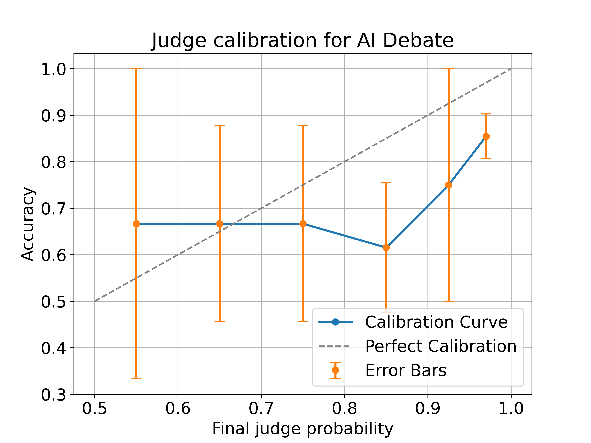
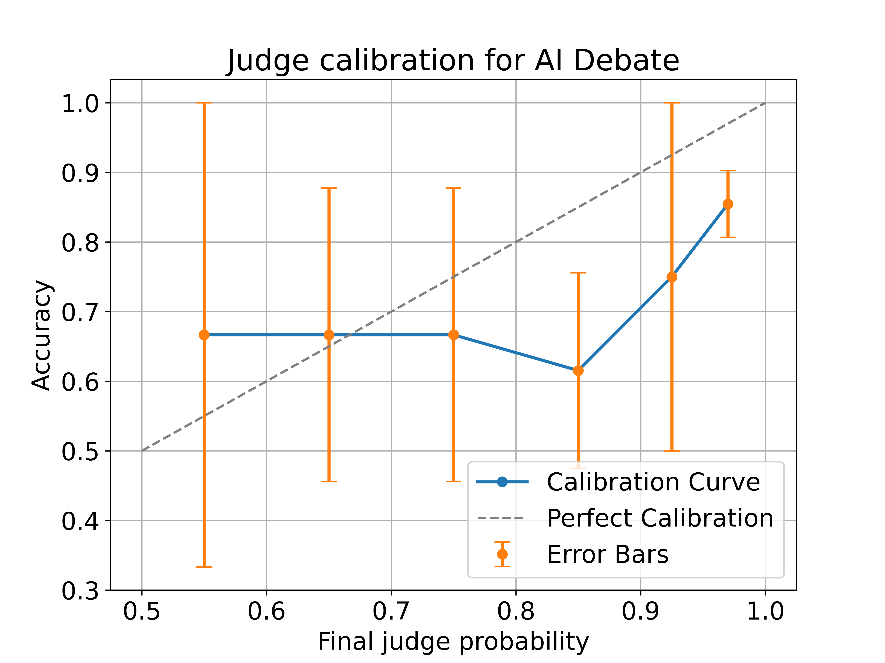

Results
Notes:
- Some of this is already in or was based on the blogpost/interface code. Hit show to see code. I switch between R and Python
- Some of this won’t make it to the paper. You can probably skip preprocessing unless you want to check certain things, example: did we make sure to remove judgments based on X condition - If you want to clarify/comment anything do so at https://github.com/sm11197/sm11197.github.io/blob/main/analysis/debate-0923.Rmd) or message me elsewhere
1 Preprocessing
1.1 Importing, filtering, and adding columns
We have 3 sets of data from the interface:
import pandas as pd
import numpy as np
import matplotlib.pyplot as plt
import re
pd.options.mode.chained_assignment = None # default='warn'
# Load summaries that can be downloaded from the interface
debates = pd.read_csv("/Users/bila/git/for-debate/debate/save/official/summaries/debates.csv", keep_default_na=True)
sessions = pd.read_csv("/Users/bila/git/for-debate/debate/save/official/summaries/sessions.csv", keep_default_na=True)
turns = pd.read_csv("/Users/bila/git/for-debate/debate/save/official/summaries/turns.csv", keep_default_na=True)
print(f' {debates.shape} - Debates') ;print(f'{sessions.shape} - Sessions, which has multiple rows (of participants) for each debate') ; print(f'{turns.shape} - and Turns, which has multiple rows (of participant turns) for each debate')## (632, 29) - Debates
## (1863, 46) - Sessions, which has multiple rows (of participants) for each debate
## (6220, 16) - and Turns, which has multiple rows (of participant turns) for each debate# Only include debates within a given period
debates["Start time"] = pd.to_datetime(debates["Start time"], unit="ms")
debates["End time"] = pd.to_datetime(debates["End time"], unit="ms")
debates["Last modified time"] = pd.to_datetime(debates["Last modified time"], unit="ms")
debates = debates[
(debates["Start time"] > pd.to_datetime("10/02/23", format="%d/%m/%y")) &
(debates["End time"] < pd.to_datetime("01/09/23", format="%d/%m/%y"))
]
### for filtering to when we had AI debates: 16/07/23
# Filter sessions & turns to only the selected debates
sessions = sessions.merge(debates[["Room name"]], how="inner", on="Room name")
turns = turns.merge(debates[["Room name"]], how="inner", on="Room name")
print(f'We have {len(debates)} debates when filtering out the initial pilots last fall')## We have 583 debates when filtering out the initial pilots last fall# Secondary analysis: Question Difficulty
# Create new columns with bin labels
debates['Untimed annotator context bins'] = pd.cut(debates['Untimed annotator context'].round(), bins=[0, 1, 2, 3, 4], labels=['1', '2', '3', '4'], right=True)
debates['Speed annotator accuracy bins'] = pd.cut(debates['Speed annotator accuracy'], bins=[-0.999, 0.001, 0.201, 0.401], labels=['0', '0.2', '0.4'])
## respectively, those speed annotator accuracies probably mean 0 right, 1 right, 2 right
debates['Final_Accuracy'] = debates['Final probability correct'] > 0.5
print(f'Average accuracy per context required by question:\n{debates.groupby("Untimed annotator context bins")["Final_Accuracy"].agg(Proportion_True=lambda x: x.mean(),Total_Count="size")}')## Average accuracy per context required by question:
## Proportion_True Total_Count
## Untimed annotator context bins
## 1 0.781250 64
## 2 0.711382 246
## 3 0.702857 175
## 4 0.632653 98
##
## <string>:2: FutureWarning: The default of observed=False is deprecated and will be changed to True in a future version of pandas. Pass observed=False to retain current behavior or observed=True to adopt the future default and silence this warning.print(f'Average accuracy per difficulty based on speed annotator accuracy:\n{debates.groupby("Speed annotator accuracy bins")["Final_Accuracy"].agg(Proportion_True=lambda x: x.mean(),Total_Count="size")}\nHm, this seems less likely to be a good indicator of question difficulty')## Average accuracy per difficulty based on speed annotator accuracy:
## Proportion_True Total_Count
## Speed annotator accuracy bins
## 0 0.728682 129
## 0.2 0.697509 281
## 0.4 0.694118 170
## Hm, this seems less likely to be a good indicator of question difficulty
##
## <string>:2: FutureWarning: The default of observed=False is deprecated and will be changed to True in a future version of pandas. Pass observed=False to retain current behavior or observed=True to adopt the future default and silence this warning.
# Determine settings for each row
def setups(row):
if 'GPT-4' in (row['Honest debater'], row['Dishonest debater']):
if row['Is single debater']:
return "AI Consultancy " + ("Honest" if row['Has honest debater'] else "Dishonest")
else:
return "AI Debate"
else:
if row['Is single debater']:
return "Human Consultancy " + ("Honest" if row['Has honest debater'] else "Dishonest")
else:
return "Human Debate"
debates['Setting'] = debates.apply(setups, axis=1)
# Agregate settings - the 4 that we normally talk about:
debates['Final_Setting'] = debates['Setting'].str.replace(' Honest', '').str.replace(' Dishonest', '')1.2 Merging, filtering for judgments
# Merge sessions with debates, so we have each judge's final probability correct and the debate's metadata
source = sessions.merge(
debates[["Room name", "Debater A","Debater B","Honest debater", "Dishonest debater",
"Is single debater", 'Has honest debater',
"Final_Setting", "Setting",
"Question", "Article ID",
"Speed annotator accuracy bins","Untimed annotator context bins",
"Speed annotator accuracy","Untimed annotator context", "Is offline",
'End time', 'Last modified time']],
how="left",
on="Room name",
)
print(f'After merging debates with sessions, we have the following participant counts for those debates:\n{source["Role"].value_counts()}') ## After merging debates with sessions, we have the following participant counts for those debates:
## Role
## Judge 549
## Debater B 487
## Debater A 458
## Offline Judge 223
## Name: count, dtype: int64#[source['Is over'] == True] to check for completed online/offline debates
# Filter out incomplete judgments
judgments = source[source['Final probability correct'].notnull()]
print(f'After filtering to judges that have finalized their judgment, we have the following judgments per role:\n{judgments["Role"].value_counts()}\nfor a total of {len(judgments)} judgments.')## After filtering to judges that have finalized their judgment, we have the following judgments per role:
## Role
## Judge 508
## Offline Judge 214
## Name: count, dtype: int64
## for a total of 722 judgments.judgments['Final_Accuracy'] = judgments['Final probability correct'] > 0.5
print(f'Of those judgments, we have this much for each setting (not consolidating honest - dishonest consultancies):\n{judgments["Setting"].value_counts()}')## Of those judgments, we have this much for each setting (not consolidating honest - dishonest consultancies):
## Setting
## Human Debate 413
## AI Debate 92
## Human Consultancy Dishonest 68
## AI Consultancy Honest 56
## Human Consultancy Honest 53
## AI Consultancy Dishonest 40
## Name: count, dtype: int64print(f'Of those judgments, we have this much for each setting (aggregated):\n{judgments.groupby("Final_Setting")["Final_Accuracy"].agg(Proportion_True=lambda x: x.mean(),Total_Count="size")}')## Of those judgments, we have this much for each setting (aggregated):
## Proportion_True Total_Count
## Final_Setting
## AI Consultancy 0.802083 96
## AI Debate 0.782609 92
## Human Consultancy 0.719008 121
## Human Debate 0.876513 413# Remove judges who see the story more than once
judgments['base_room_name'] = judgments['Room name'].str.extract('(.*)\d+$', expand=False).fillna(judgments['Room name'])
judgments = judgments.sort_values(by=['base_room_name','End time']).groupby(['Participant', 'base_room_name']).first().reset_index()
print(f'1. We then filter to judgments where the judge has only seen a story once, and now we have this much for each setting (aggregated):\n{judgments.groupby("Final_Setting")["Final_Accuracy"].agg(Proportion_True=lambda x: x.mean(),Total_Count="size")}')## 1. We then filter to judgments where the judge has only seen a story once, and now we have this much for each setting (aggregated):
## Proportion_True Total_Count
## Final_Setting
## AI Consultancy 0.802083 96
## AI Debate 0.782609 92
## Human Consultancy 0.719008 121
## Human Debate 0.867374 377# Filter to online judges only
judgments_online = judgments[judgments["Role"] == "Judge"]
print(f'2. We\'ll make a copy of the online judgments only leaving us with the following judgments:\n{judgments_online.groupby("Final_Setting")["Final_Accuracy"].agg(Proportion_True=lambda x: x.mean(),Total_Count="size")}')## 2. We'll make a copy of the online judgments only leaving us with the following judgments:
## Proportion_True Total_Count
## Final_Setting
## AI Consultancy 0.797872 94
## AI Debate 0.791209 91
## Human Consultancy 0.709091 110
## Human Debate 0.861538 195judgments_online = judgments_online[judgments_online['Untimed annotator context bins'].isin(['2', '3', '4'])]
print(f'3. We then filter to judgments which require more than a sentence or two, and now we have this much for each setting (aggregated):\n{judgments_online.groupby(["Final_Setting"])["Final_Accuracy"].agg(Proportion_True=lambda x: x.mean(),Total_Count="size")}')## 3. We then filter to judgments which require more than a sentence or two, and now we have this much for each setting (aggregated):
## Proportion_True Total_Count
## Final_Setting
## AI Consultancy 0.806452 93
## AI Debate 0.781609 87
## Human Consultancy 0.700935 107
## Human Debate 0.838710 155pd.set_option('display.max_columns', None)
total_counts_for_setting = judgments_online.groupby('Final_Setting').size()
result = judgments_online.groupby(["Final_Setting", "Untimed annotator context bins"]).agg(
Proportion_True=pd.NamedAgg(column='Final_Accuracy', aggfunc=lambda x: x.mean()),
Context_Count=pd.NamedAgg(column='Final_Accuracy', aggfunc='size'),
Proportion_Context=pd.NamedAgg(column='Final_Setting', aggfunc=lambda x: len(x) / total_counts_for_setting[x.mode()])
)## <string>:1: FutureWarning: The default of observed=False is deprecated and will be changed to True in a future version of pandas. Pass observed=False to retain current behavior or observed=True to adopt the future default and silence this warning.print(f'Are the difficult questions equally enough distributed amongst settings?:\n{result}')## Are the difficult questions equally enough distributed amongst settings?:
## Proportion_True \
## Final_Setting Untimed annotator context bins
## AI Consultancy 1 NaN
## 2 0.823529
## 3 0.826087
## 4 0.736842
## AI Debate 1 NaN
## 2 0.777778
## 3 0.772727
## 4 0.800000
## Human Consultancy 1 NaN
## 2 0.634146
## 3 0.708333
## 4 0.833333
## Human Debate 1 NaN
## 2 0.890411
## 3 0.816667
## 4 0.727273
##
## Context_Count \
## Final_Setting Untimed annotator context bins
## AI Consultancy 1 0
## 2 51
## 3 23
## 4 19
## AI Debate 1 0
## 2 45
## 3 22
## 4 20
## Human Consultancy 1 0
## 2 41
## 3 48
## 4 18
## Human Debate 1 0
## 2 73
## 3 60
## 4 22
##
## Proportion_Context
## Final_Setting Untimed annotator context bins
## AI Consultancy 1 NaN
## 2 0.548387
## 3 0.247312
## 4 0.204301
## AI Debate 1 NaN
## 2 0.517241
## 3 0.252874
## 4 0.229885
## Human Consultancy 1 NaN
## 2 0.383178
## 3 0.448598
## 4 0.168224
## Human Debate 1 NaN
## 2 0.470968
## 3 0.387097
## 4 0.141935pd.reset_option('display.max_columns')So question difficulty isn’t perfectly balanced… but consultancies have a different relationship with question difficulty anyway? need a second opinion
1.3 Trying to balance the data
- Balancing honest & dishonest consultancies
- Question weights
1.3.1 Balancing honest & dishonest consultancies
def balance_consultancies(df, sample_setting, random_state):
"""
Sample distinct questions, then use common questions, ensure equal counts.
"""
consult_df = df[df['Setting'].str.contains(sample_setting, na=False)]
honest_df = consult_df[consult_df['Setting'].str.contains('Honest')]
dishonest_df = consult_df[consult_df['Setting'].str.contains('Dishonest')]
sample_column_name = f'{sample_setting} Sample'
df[sample_column_name] = False
# Separate into distinct and common questions
# First, let's extract the combinations of 'Article ID' and 'Question' for both honest and dishonest dataframes
honest_combinations = set(honest_df[['Article ID', 'Question']].itertuples(index=False, name=None))
dishonest_combinations = set(dishonest_df[['Article ID', 'Question']].itertuples(index=False, name=None))
# Identifying the common and distinct combinations
common_combinations = honest_combinations.intersection(dishonest_combinations)
distinct_honest_combinations = honest_combinations - common_combinations
distinct_dishonest_combinations = dishonest_combinations - common_combinations
# Filtering the original dataframes based on these combinations to get distinct and common dataframes
common_honest_df = honest_df[honest_df.set_index(['Article ID', 'Question']).index.isin(common_combinations)]
common_dishonest_df = dishonest_df[dishonest_df.set_index(['Article ID', 'Question']).index.isin(common_combinations)]
distinct_honest_df = honest_df[honest_df.set_index(['Article ID', 'Question']).index.isin(distinct_honest_combinations)]
distinct_dishonest_df = dishonest_df[dishonest_df.set_index(['Article ID', 'Question']).index.isin(distinct_dishonest_combinations)]
def extract_correct_index(sample_df):
if isinstance(sample_df.index, pd.MultiIndex):
return sample_df.index.get_level_values(2)
else:
return sample_df.index
# Get distinct consultancies
sample_size = min(len(distinct_honest_df.groupby(['Question', 'Article ID'])), len(distinct_dishonest_df.groupby(['Question', 'Article ID'])))
honest_sample = distinct_honest_df.groupby(['Question', 'Article ID']).apply(lambda x: x.sample(1, random_state=random_state)).sample(sample_size, random_state=random_state)
dishonest_sample = distinct_dishonest_df.groupby(['Question', 'Article ID']).apply(lambda x: x.sample(1, random_state=random_state)).sample(sample_size, random_state=random_state)
df.loc[extract_correct_index(honest_sample), sample_column_name] = True
df.loc[extract_correct_index(dishonest_sample), sample_column_name] = True
# Drop sampled questions from distinct dataframes
honest_remove_distinct = set(honest_sample[['Article ID', 'Question']].itertuples(index=False, name=None))
dishonest_remove_distinct = set(dishonest_sample[['Article ID', 'Question']].itertuples(index=False, name=None))
distinct_honest_df = distinct_honest_df[~distinct_honest_df.set_index(['Article ID', 'Question']).index.isin(honest_remove_distinct)]
distinct_dishonest_df = distinct_dishonest_df[~distinct_dishonest_df.set_index(['Article ID', 'Question']).index.isin(dishonest_remove_distinct)]
honest_distinct_remaining = len(distinct_honest_df.groupby(['Question', 'Article ID']))
dishonest_distinct_remaining = len(distinct_dishonest_df.groupby(['Question', 'Article ID']))
# Sample from remaining distinct questions, using common questions for the other (bigger count) setting as needed
if honest_distinct_remaining > dishonest_distinct_remaining:
sample_size = min(honest_distinct_remaining, len(common_dishonest_df.groupby(['Question', 'Article ID'])))
honest_sample = distinct_honest_df.groupby(['Question', 'Article ID']).apply(lambda x: x.sample(1, random_state=random_state)).sample(sample_size, random_state=random_state)
dishonest_sample = common_dishonest_df.groupby(['Question', 'Article ID']).apply(lambda x: x.sample(1, random_state=random_state)).sample(sample_size, random_state=random_state)
df.loc[extract_correct_index(dishonest_sample), sample_column_name] = True
df.loc[extract_correct_index(honest_sample), sample_column_name] = True
dishonest_remove_common = set(dishonest_sample[['Article ID', 'Question']].itertuples(index=False, name=None))
common_dishonest_df = common_dishonest_df[~common_dishonest_df.set_index(['Article ID', 'Question']).index.isin(dishonest_remove_common)]
common_honest_df = common_honest_df[~common_honest_df.set_index(['Article ID', 'Question']).index.isin(dishonest_remove_common)]
else:
sample_size = min(dishonest_distinct_remaining, len(common_honest_df.groupby(['Question', 'Article ID'])))
honest_sample = common_honest_df.groupby(['Question', 'Article ID']).apply(lambda x: x.sample(1, random_state=random_state)).sample(sample_size, random_state=random_state)
dishonest_sample = distinct_dishonest_df.groupby(['Question', 'Article ID']).apply(lambda x: x.sample(1, random_state=random_state)).sample(sample_size, random_state=random_state)
df.loc[extract_correct_index(dishonest_sample), sample_column_name] = True
df.loc[extract_correct_index(honest_sample), sample_column_name] = True
honest_remove_common = set(honest_sample[['Article ID', 'Question']].itertuples(index=False, name=None))
common_dishonest_df = common_dishonest_df[~common_dishonest_df.set_index(['Article ID', 'Question']).index.isin(honest_remove_common)]
common_honest_df = common_honest_df[~common_honest_df.set_index(['Article ID', 'Question']).index.isin(honest_remove_common)]
# Remaining independent samples from common_honest_df
if len(common_honest_df) or len(common_dishonest_df) > 0:
sample_size = min(len(common_honest_df.groupby(['Question', 'Article ID'])), len(common_dishonest_df.groupby(['Question', 'Article ID'])))
honest_sample = common_honest_df.groupby(['Question', 'Article ID']).apply(lambda x: x.sample(1, random_state=random_state)).sample(sample_size, random_state=random_state)
dishonest_sample = common_dishonest_df.groupby(['Question', 'Article ID']).apply(lambda x: x.sample(1, random_state=random_state)).sample(sample_size, random_state=random_state)
df.loc[extract_correct_index(honest_sample), sample_column_name] = True
df.loc[extract_correct_index(dishonest_sample), sample_column_name] = True
return df
# Run the sampling to balance the consultancies
judgments_online = balance_consultancies(judgments_online, 'Human Consultancy', random_state = 123)
judgments_online = balance_consultancies(judgments_online, 'AI Consultancy', random_state = 123)
# Create one sample column for easier indexing, create mask
#sample_columns = [col for col in judgments_online.columns if 'Sample' in col]
#judgments_online['Sample'] = judgments_online[sample_columns].any(axis=1)
#consultancy_balanced = (~judgments_online['Setting'].str.contains('Consultancy', case=False, na=False)) | (judgments_online['Sample'] == True)
#print(f'Accuracy after balancing consultancies:\n{judgments_online[consultancy_balanced].groupby(["Final_Setting"])["Final_Accuracy"].agg(Proportion_True=lambda x: x.mean(),Total_Count="size")}')
#from statsmodels.stats.proportion import proportions_ztest
def run_experiment(judgments_online):
judgments_online['Sample'] = False
judgments_online = balance_consultancies(judgments_online, 'Human Consultancy')
judgments_online = balance_consultancies(judgments_online, 'AI Consultancy')
sample_columns = [col for col in judgments_online.columns if 'Sample' in col]
judgments_online['Sample'] = judgments_online[sample_columns].any(axis=1)
consultancy_balanced = (~judgments_online['Setting'].str.contains('Consultancy', case=False, na=False)) | (judgments_online['Sample'] == True)
result = judgments_online[consultancy_balanced].groupby(["Final_Setting"])["Final_Accuracy"].agg(Proportion_True=lambda x: x.mean(), Total_Count="size")
return result
# Number of iterations
#num_iterations = 1000
# Store results from each iteration
#results = []
#p_vals = []
# Run the experiment multiple times
#for _ in range(num_iterations):
# result = run_experiment(judgments_online.copy()) # Use a copy to ensure original data remains unchanged
# results.append(result)
# # Run the proportions test
# group_human_debate = result.loc['Human Debate']
# group_human_consultancy = result.loc['Human Consultancy']
# count = [group_human_debate.Proportion_True * group_human_debate.Total_Count, group_human_consultancy.Proportion_True * group_human_consultancy.Total_Count]
# nobs = [group_human_debate.Total_Count, group_human_consultancy.Total_Count]
# z_stat, p_val = proportions_ztest(count, nobs)
# p_vals.append(p_val)
# Calculate the average of the results
#average_result = pd.concat(results).groupby(level=0).mean()
#print(f'\nAverage accuracy after {num_iterations} iterations:\n{average_result}')
#print(f'pval mean: {np.mean(p_vals)}')1.3.2 Balance debates
def balance_debates(df, sample_setting, random_state):
debates_df = df[df['Setting'].str.contains(sample_setting, na=False)]
sample_column_name = f'{sample_setting} Sample'
df[sample_column_name] = False
def extract_correct_index(sample_df):
if isinstance(sample_df.index, pd.MultiIndex):
return sample_df.index.get_level_values(2)
else:
return sample_df.index
# Get distinct consultancies
sample_size = len(debates_df.groupby(['Question', 'Article ID']))
sample_debates = debates_df.groupby(['Question', 'Article ID']).apply(lambda x: x.sample(1, random_state=random_state)).sample(sample_size, random_state=random_state)
df.loc[extract_correct_index(sample_debates), sample_column_name] = True
return df
# Run the sampling to balance the consultancies
judgments_online = balance_debates(judgments_online, 'Human Debate', random_state = 123)
judgments_online = balance_debates(judgments_online, 'AI Debate', random_state = 123)
# Create one sample column for easier indexing, create mask
sample_columns = [col for col in judgments_online.columns if 'Sample' in col]
consultancy_sample_columns = [col for col in judgments_online.columns if 'Consultancy Sample' in col]
judgments_online['Sample'] = judgments_online[sample_columns].any(axis=1)
judgments_online['Consultancy Sample'] = judgments_online[sample_columns].any(axis=1)
consultancy_balanced = (~judgments_online['Setting'].str.contains('Consultancy', case=False, na=False)) | (judgments_online['Sample'] == True)
print(f'Accuracy after balancing consultancies:\n{judgments_online.groupby(["Final_Setting"])["Sample"].value_counts()}')## Accuracy after balancing consultancies:
## Final_Setting Sample
## AI Consultancy True 76
## False 17
## AI Debate True 75
## False 12
## Human Consultancy True 82
## False 25
## Human Debate True 107
## False 48
## Name: count, dtype: int641.3.3 Question weights
def question_weights(data, columns, weight_column_name, consultancy_sample=None, debate_sample=None):
# 0. Make a copy of the original data for weight calculations
working_data = data.copy()
# 0.1. Custom filtering based on the 'Setting' column
consultancy_condition = working_data['Setting'].str.contains('Consultancy', case=False, na=False)
debate_condition = ~consultancy_condition
if consultancy_sample is not None:
consultancy_condition &= (working_data['Sample'] == consultancy_sample)
if debate_sample is not None: # uncomment if we want to sample debates
debate_condition &= (working_data['Sample'] == debate_sample)
combined_mask = consultancy_condition | debate_condition
working_data = working_data[combined_mask]
# 1. Calculate the frequency of each question in the dataset
question_frequency = working_data.groupby(columns).size()
# 2. Invert the frequency to get the weight for each question
question_weights = 1 / question_frequency
# 3. Normalize the weights
#question_weights = question_weights / question_weights.sum() * len(question_weights)
# 4. Assign the calculated weights to the original data and fill missing values with 0
data.loc[combined_mask, weight_column_name] = data[combined_mask].set_index(columns).index.map(question_weights).fillna(0).values
data[weight_column_name].fillna(0, inplace=True)
return data
judgments_online = question_weights(
data=judgments_online,
columns=['Article ID', 'Question'],
weight_column_name='initial_question_weights'
)
judgments_online = question_weights(
data=judgments_online,
columns=['Article ID', 'Question', 'Final_Setting'],
weight_column_name='initial_question_weights_grouped_setting'
)def print_weight_summary_by_setting(df, weight_column, consultancy_sample=None):
consultancy_condition = df['Setting'].str.contains('Consultancy', case=False, na=False)
if consultancy_sample is not None:
consultancy_condition &= (df['Sample'] == consultancy_sample)
for setting in df['Setting'].unique():
total_weight = df[df['Setting'] == setting][weight_column].sum()
print(f"Total {weight_column} for {setting}: {total_weight:.2f}")
print("\n")
print('Unsampled (initial) weights, by group setting')## Unsampled (initial) weights, by group settingprint_weight_summary_by_setting(judgments_online, 'initial_question_weights_grouped_setting')## Total initial_question_weights_grouped_setting for AI Consultancy Dishonest: 32.50
## Total initial_question_weights_grouped_setting for Human Debate: 107.00
## Total initial_question_weights_grouped_setting for AI Debate: 75.00
## Total initial_question_weights_grouped_setting for Human Consultancy Dishonest: 34.67
## Total initial_question_weights_grouped_setting for Human Consultancy Honest: 26.33
## Total initial_question_weights_grouped_setting for AI Consultancy Honest: 49.50# Recalculate weights for balanced consultancies, all debates
judgments_online = question_weights(
data=judgments_online,
columns=['Article ID', 'Question'],
weight_column_name='sampled_consultancies_all_debates_weights',
consultancy_sample=True
)
judgments_online = question_weights(
data=judgments_online,
columns=['Article ID', 'Question', 'Final_Setting'],
weight_column_name='sampled_consultancies_all_debates_weights_grouped_setting',
consultancy_sample=True
)
judgments_online = question_weights(
data=judgments_online,
columns=['Article ID', 'Question', 'Setting'],
weight_column_name='sampled_consultancies_all_debates_weights_setting',
consultancy_sample=True
)
print('Consultancy balanced weights, by no/yes group setting')## Consultancy balanced weights, by no/yes group settingprint_weight_summary_by_setting(judgments_online[consultancy_balanced], 'sampled_consultancies_all_debates_weights', consultancy_sample=True)## Total sampled_consultancies_all_debates_weights for AI Consultancy Dishonest: 28.07
## Total sampled_consultancies_all_debates_weights for Human Debate: 82.48
## Total sampled_consultancies_all_debates_weights for AI Debate: 66.52
## Total sampled_consultancies_all_debates_weights for Human Consultancy Honest: 16.52
## Total sampled_consultancies_all_debates_weights for Human Consultancy Dishonest: 16.00
## Total sampled_consultancies_all_debates_weights for AI Consultancy Honest: 36.42print_weight_summary_by_setting(judgments_online[consultancy_balanced], 'sampled_consultancies_all_debates_weights_grouped_setting', consultancy_sample=True)## Total sampled_consultancies_all_debates_weights_grouped_setting for AI Consultancy Dishonest: 38.00
## Total sampled_consultancies_all_debates_weights_grouped_setting for Human Debate: 107.00
## Total sampled_consultancies_all_debates_weights_grouped_setting for AI Debate: 75.00
## Total sampled_consultancies_all_debates_weights_grouped_setting for Human Consultancy Honest: 30.50
## Total sampled_consultancies_all_debates_weights_grouped_setting for Human Consultancy Dishonest: 30.50
## Total sampled_consultancies_all_debates_weights_grouped_setting for AI Consultancy Honest: 38.00print_weight_summary_by_setting(judgments_online[consultancy_balanced], 'sampled_consultancies_all_debates_weights_setting', consultancy_sample=True)## Total sampled_consultancies_all_debates_weights_setting for AI Consultancy Dishonest: 38.00
## Total sampled_consultancies_all_debates_weights_setting for Human Debate: 107.00
## Total sampled_consultancies_all_debates_weights_setting for AI Debate: 75.00
## Total sampled_consultancies_all_debates_weights_setting for Human Consultancy Honest: 41.00
## Total sampled_consultancies_all_debates_weights_setting for Human Consultancy Dishonest: 41.00
## Total sampled_consultancies_all_debates_weights_setting for AI Consultancy Honest: 38.00
judgments_online = question_weights(
data=judgments_online,
columns=['Article ID', 'Question', 'Final_Setting'],
weight_column_name='sampled_consultancies_debates_weights_grouped_setting',
consultancy_sample=True,
debate_sample=True
)
judgments_online = question_weights(
data=judgments_online,
columns=['Article ID', 'Question'],
weight_column_name='sampled_consultancies_debates_weights',
consultancy_sample=True,
debate_sample=True
)Note: we are not balancing between settings, and some of the counts of the debate settings are on the same questions
1.4 Load into R environment
set.seed(123)
judgments <- py$judgments
judgments_online <- py$judgments_online
# Convert the Accuracy column to a factor for better plotting
judgments_online$Final_Accuracy_char <- as.logical.factor(as.character(judgments_online$Final_Accuracy))
judgments_online$Participant <- as.factor(judgments_online$Participant)
judgments_online$Setting <- as.factor(judgments_online$Setting)
subset_dishonest <- judgments_online[judgments_online$`Human Consultancy Sample` == TRUE & judgments_online$Setting == 'Human Consultancy Dishonest', c("sampled_consultancies_all_debates_weights_grouped_setting","Final_Accuracy")]
subset_honest <- judgments_online[judgments_online$`Human Consultancy Sample` == TRUE & judgments_online$Setting == 'Human Consultancy Honest', c("sampled_consultancies_all_debates_weights_grouped_setting","Final_Accuracy")]
table(subset_dishonest$sampled_consultancies_all_debates_weights_grouped_setting, subset_dishonest$Final_Accuracy)##
## FALSE TRUE
## 0.5 11 10
## 1 7 13table(subset_honest$sampled_consultancies_all_debates_weights_grouped_setting, subset_honest$Final_Accuracy)##
## FALSE TRUE
## 0.5 5 16
## 1 1 19table(subset_dishonest$sampled_consultancies_all_debates_weights_grouped_setting)##
## 0.5 1
## 21 20table(subset_honest$sampled_consultancies_all_debates_weights_grouped_setting)##
## 0.5 1
## 21 20subset_human_consultancies <- judgments_online[judgments_online$`Human Consultancy Sample` == TRUE & judgments_online$Final_Setting == 'Human Consultancy', c("sampled_consultancies_all_debates_weights_grouped_setting","Final_Accuracy")]
table(subset_human_consultancies$sampled_consultancies_all_debates_weights_grouped_setting, subset_human_consultancies$Final_Accuracy)##
## FALSE TRUE
## 0.5 16 26
## 1 8 32table(judgments_online$Final_Setting, judgments_online$sampled_consultancies_all_debates_weights_grouped_setting)##
## 0 0.5 1
## AI Consultancy 17 0 76
## AI Debate 0 24 63
## Human Consultancy 25 42 40
## Human Debate 0 96 59table(judgments_online$Final_Setting, judgments_online$sampled_consultancies_debates_weights)##
## 0 0.2 0.25 0.333333333333333 0.5 1
## AI Consultancy 17 1 9 4 1 61
## AI Debate 12 1 9 3 1 61
## Human Consultancy 25 2 9 32 32 7
## Human Debate 48 1 9 15 20 622 Results
2.1 Accuracy
2.1.1 Difference in proportions
acc_diff_test <- function(design, Setting){
print(design)
freq_table <- svytable(~Final_Setting+Final_Accuracy, design)
chisq_result <- svychisq(~Final_Setting+Final_Accuracy, design, statistic = "Chisq")
print(chisq_result)
pairwise_result <- pairwise.prop.test(freq_table, p.adjust.method="none", alternative="two.sided")
print(pairwise_result)
freq_table <- cbind(freq_table, Accuracy = (freq_table[,2] / (freq_table[,1]+freq_table[,2]))*100)
print(freq_table)
}
print("Really raw")## [1] "Really raw"acc_diff_test(svydesign(ids = ~1, data = judgments))## Warning in svydesign.default(ids = ~1, data = judgments): No weights or
## probabilities supplied, assuming equal probability## Independent Sampling design (with replacement)
## print(design)
##
## Pearson's X^2: Rao & Scott adjustment
##
## data: svychisq(~Final_Setting + Final_Accuracy, design, statistic = "Chisq")
## X-squared = 15.218, df = 3, p-value = 0.001657
##
##
## Pairwise comparisons using Pairwise comparison of proportions
##
## data: freq_table
##
## AI Consultancy AI Debate Human Consultancy
## AI Debate 0.88133 - -
## Human Consultancy 0.20924 0.36922 -
## Human Debate 0.14538 0.05977 0.00026
##
## P value adjustment method: none
## FALSE TRUE Accuracy
## AI Consultancy 19 77 80.20833
## AI Debate 20 72 78.26087
## Human Consultancy 34 87 71.90083
## Human Debate 50 327 86.73740print("Raw")## [1] "Raw"acc_diff_test(svydesign(ids = ~1, data = judgments_online))## Warning in svydesign.default(ids = ~1, data = judgments_online): No weights or
## probabilities supplied, assuming equal probability## Independent Sampling design (with replacement)
## print(design)
##
## Pearson's X^2: Rao & Scott adjustment
##
## data: svychisq(~Final_Setting + Final_Accuracy, design, statistic = "Chisq")
## X-squared = 7.4336, df = 3, p-value = 0.05973
##
##
## Pairwise comparisons using Pairwise comparison of proportions
##
## data: freq_table
##
## AI Consultancy AI Debate Human Consultancy
## AI Debate 0.820 - -
## Human Consultancy 0.120 0.269 -
## Human Debate 0.634 0.352 0.012
##
## P value adjustment method: none
## FALSE TRUE Accuracy
## AI Consultancy 18 75 80.64516
## AI Debate 19 68 78.16092
## Human Consultancy 32 75 70.09346
## Human Debate 25 130 83.87097print("Balanced consultancies")## [1] "Balanced consultancies"acc_diff_test(svydesign(ids = ~1, data = subset(judgments_online, `Consultancy Sample` == TRUE | !grepl("Consultancy", Final_Setting))))## Warning in svydesign.default(ids = ~1, data = subset(judgments_online,
## `Consultancy Sample` == : No weights or probabilities supplied, assuming equal
## probability## Independent Sampling design (with replacement)
## print(design)
##
## Pearson's X^2: Rao & Scott adjustment
##
## data: svychisq(~Final_Setting + Final_Accuracy, design, statistic = "Chisq")
## X-squared = 5.9826, df = 3, p-value = 0.1132
##
##
## Pairwise comparisons using Pairwise comparison of proportions
##
## data: freq_table
##
## AI Consultancy AI Debate Human Consultancy
## AI Debate 0.729 - -
## Human Consultancy 0.159 0.352 -
## Human Debate 0.803 0.352 0.027
##
## P value adjustment method: none
## FALSE TRUE Accuracy
## AI Consultancy 14 62 81.57895
## AI Debate 19 68 78.16092
## Human Consultancy 24 58 70.73171
## Human Debate 25 130 83.87097print("Balanced consultancies, question weights (grouped settings)")## [1] "Balanced consultancies, question weights (grouped settings)"acc_diff_test(svydesign(ids = ~1, data = subset(judgments_online, `Consultancy Sample` == TRUE | !grepl("Consultancy", Final_Setting)), weights = ~sampled_consultancies_all_debates_weights_grouped_setting))## Independent Sampling design (with replacement)
## print(design)
##
## Pearson's X^2: Rao & Scott adjustment
##
## data: svychisq(~Final_Setting + Final_Accuracy, design, statistic = "Chisq")
## X-squared = 3.7897, df = 3, p-value = 0.3186
##
##
## Pairwise comparisons using Pairwise comparison of proportions
##
## data: freq_table
##
## AI Consultancy AI Debate Human Consultancy
## AI Debate 0.89 - -
## Human Consultancy 0.37 0.58 -
## Human Debate 0.74 0.47 0.13
##
## P value adjustment method: none
## FALSE TRUE Accuracy
## AI Consultancy 14.0 62.0 81.57895
## AI Debate 15.5 59.5 79.33333
## Human Consultancy 16.0 45.0 73.77049
## Human Debate 16.5 90.5 84.57944acc_diff_test(svydesign(ids = ~1, data = subset(judgments_online, `Consultancy Sample` == TRUE | !grepl("Consultancy", Final_Setting)), weights = ~sampled_consultancies_all_debates_weights))## Independent Sampling design (with replacement)
## print(design)
##
## Pearson's X^2: Rao & Scott adjustment
##
## data: svychisq(~Final_Setting + Final_Accuracy, design, statistic = "Chisq")
## X-squared = 7.6386, df = 3, p-value = 0.09546
##
##
## Pairwise comparisons using Pairwise comparison of proportions
##
## data: freq_table
##
## AI Consultancy AI Debate Human Consultancy
## AI Debate 1.000 - -
## Human Consultancy 0.409 0.446 -
## Human Debate 0.335 0.286 0.059
##
## P value adjustment method: none
## FALSE TRUE Accuracy
## AI Consultancy 13.200000 51.28333 79.52959
## AI Debate 14.016667 52.50000 78.92759
## Human Consultancy 9.866667 22.65000 69.65659
## Human Debate 10.850000 71.63333 86.84583print("Balanced consultancies sampled debates, question weights (grouped settings)")## [1] "Balanced consultancies sampled debates, question weights (grouped settings)"acc_diff_test(svydesign(ids = ~1, data = subset(judgments_online, `Sample` == TRUE), weights = ~sampled_consultancies_debates_weights_grouped_setting))## Independent Sampling design (with replacement)
## print(design)
##
## Pearson's X^2: Rao & Scott adjustment
##
## data: svychisq(~Final_Setting + Final_Accuracy, design, statistic = "Chisq")
## X-squared = 3.4707, df = 3, p-value = 0.3286
##
##
## Pairwise comparisons using Pairwise comparison of proportions
##
## data: freq_table
##
## AI Consultancy AI Debate Human Consultancy
## AI Debate 0.97 - -
## Human Consultancy 0.37 0.51 -
## Human Debate 0.67 0.49 0.11
##
## P value adjustment method: none
## FALSE TRUE Accuracy
## AI Consultancy 14 62 81.57895
## AI Debate 15 60 80.00000
## Human Consultancy 16 45 73.77049
## Human Debate 16 91 85.04673acc_diff_test(svydesign(ids = ~1, data = judgments_online, weights = ~sampled_consultancies_debates_weights_grouped_setting))## Independent Sampling design (with replacement)
## print(design)
##
## Pearson's X^2: Rao & Scott adjustment
##
## data: svychisq(~Final_Setting + Final_Accuracy, design, statistic = "Chisq")
## X-squared = 4.5119, df = 3, p-value = 0.3283
##
##
## Pairwise comparisons using Pairwise comparison of proportions
##
## data: freq_table
##
## AI Consultancy AI Debate Human Consultancy
## AI Debate 0.97 - -
## Human Consultancy 0.37 0.51 -
## Human Debate 0.67 0.49 0.11
##
## P value adjustment method: none
## FALSE TRUE Accuracy
## AI Consultancy 14 62 81.57895
## AI Debate 15 60 80.00000
## Human Consultancy 16 45 73.77049
## Human Debate 16 91 85.04673design = svydesign(ids = ~1, data = subset(judgments_online, `Human Consultancy Sample` == TRUE | !grepl("Consultancy", Final_Setting) & !grepl("AI", Final_Setting)), weights = ~sampled_consultancies_all_debates_weights_grouped_setting)
acc_diff_test(design)## Independent Sampling design (with replacement)
## svydesign(ids = ~1, data = subset(judgments_online, `Human Consultancy Sample` ==
## TRUE | !grepl("Consultancy", Final_Setting) & !grepl("AI",
## Final_Setting)), weights = ~sampled_consultancies_all_debates_weights_grouped_setting)
##
## Pearson's X^2: Rao & Scott adjustment
##
## data: svychisq(~Final_Setting + Final_Accuracy, design, statistic = "Chisq")
## X-squared = 4.104, df = 1, p-value = 0.05155
##
##
## Pairwise comparisons using Pairwise comparison of proportions
##
## data: freq_table
##
## Human Consultancy
## Human Debate 0.13
##
## P value adjustment method: none
## FALSE TRUE Accuracy
## Human Consultancy 16.0 45.0 73.77049
## Human Debate 16.5 90.5 84.57944final_table <- svytable(~Final_Setting+Final_Accuracy,
design = svydesign(ids = ~1,
data = subset(judgments_online, `Consultancy Sample` == TRUE | !grepl("Consultancy", Final_Setting)),
weights = ~sampled_consultancies_all_debates_weights_grouped_setting))
final_table## Final_Accuracy
## Final_Setting FALSE TRUE
## AI Consultancy 14.0 62.0
## AI Debate 15.5 59.5
## Human Consultancy 16.0 45.0
## Human Debate 16.5 90.5# Add accuracy
final_table <- cbind(final_table, Accuracy = (final_table[,2] / (final_table[,1]+final_table[,2]))*100)
# Calculate the difference in accuracy for each row compared to "Human Debate"
difference_with_debate <- final_table[,"Accuracy"] - final_table["Human Debate", "Accuracy"]
# Bind the difference column to the final_table
final_table <- cbind(final_table, difference_with_debate)
# Loop through each setting
ci_lowers <- c()
ci_uppers <- c()
p_values <- c()
# Loop through each setting
for (setting in rownames(final_table)) {
# Use prop.test to compare the setting's accuracy with "Human Debate"
results <- prop.test(c(final_table["Human Debate", "TRUE"], final_table[setting, "TRUE"]), c((final_table["Human Debate", "TRUE"]+final_table["Human Debate", "FALSE"]), (final_table[setting, "TRUE"]+final_table[setting, "FALSE"])))
# Extract the confidence interval and store it as a string in the format "lower - upper"
ci_lower <- results$conf.int[1] * 100 # Multiply by 100 to convert to percentage
ci_upper <- results$conf.int[2] * 100 # Multiply by 100 to convert to percentage
ci_lowers <- c(ci_lowers, ci_lower)
ci_uppers <- c(ci_uppers, ci_upper)
p_values <- c(p_values, results$p.value)
}
final_table <- cbind(final_table, ci_lowers, ci_uppers, p_values)
final_table## FALSE TRUE Accuracy difference_with_debate ci_lowers
## AI Consultancy 14.0 62.0 81.57895 -3.000492 -9.205452
## AI Debate 15.5 59.5 79.33333 -5.246106 -7.324725
## Human Consultancy 16.0 45.0 73.77049 -10.808947 -3.465654
## Human Debate 16.5 90.5 84.57944 0.000000 -9.677288
## ci_uppers p_values
## AI Consultancy 15.206436 0.7372949
## AI Debate 17.816936 0.4731832
## Human Consultancy 25.083549 0.1329563
## Human Debate 9.677288 1.0000000# Display the updated table using knitr::kable
knitr::kable(final_table, booktab = TRUE, digits = c(rep(1,6),3),
col.names = c("# Incorrect (weighted)", "# Correct (weighted)", "Accuracy", "Difference", "95% CI Lower Limit","95% CI Upper Limit","p-value"))| # Incorrect (weighted) | # Correct (weighted) | Accuracy | Difference | 95% CI Lower Limit | 95% CI Upper Limit | p-value | |
|---|---|---|---|---|---|---|---|
| AI Consultancy | 14.0 | 62.0 | 81.6 | -3.0 | -9.2 | 15.2 | 0.737 |
| AI Debate | 15.5 | 59.5 | 79.3 | -5.2 | -7.3 | 17.8 | 0.473 |
| Human Consultancy | 16.0 | 45.0 | 73.8 | -10.8 | -3.5 | 25.1 | 0.133 |
| Human Debate | 16.5 | 90.5 | 84.6 | 0.0 | -9.7 | 9.7 | 1.000 |
human_only <- subset(judgments_online, `Human Consultancy Sample` == TRUE | !grepl("Consultancy", Final_Setting) & !grepl("AI", Final_Setting))
human_only$Setting <- droplevels(human_only$Setting)
table(human_only$Setting)##
## Human Consultancy Dishonest Human Consultancy Honest
## 41 41
## Human Debate
## 155final_table <- svytable(~Setting+Final_Accuracy,
design = svydesign(ids = ~1,
data = human_only,
weights = ~sampled_consultancies_all_debates_weights_setting))
final_table## Final_Accuracy
## Setting FALSE TRUE
## Human Consultancy Dishonest 18.0 23.0
## Human Consultancy Honest 6.0 35.0
## Human Debate 16.5 90.5# Add accuracy
final_table <- cbind(final_table, Accuracy = (final_table[,2] / (final_table[,1]+final_table[,2]))*100)
# Calculate the difference in accuracy for each row compared to "Human Debate"
difference_with_debate <- final_table[,"Accuracy"] - final_table["Human Debate", "Accuracy"]
# Bind the difference column to the final_table
final_table <- cbind(final_table, difference_with_debate)
# Loop through each setting
ci_lowers <- c()
ci_uppers <- c()
p_values <- c()
# Loop through each setting
for (setting in rownames(final_table)) {
# Use prop.test to compare the setting's accuracy with "Human Debate"
results <- prop.test(c(final_table["Human Debate", "TRUE"], final_table[setting, "TRUE"]), c((final_table["Human Debate", "TRUE"]+final_table["Human Debate", "FALSE"]), (final_table[setting, "TRUE"]+final_table[setting, "FALSE"])))
# Extract the confidence interval and store it as a string in the format "lower - upper"
ci_lower <- results$conf.int[1] * 100 # Multiply by 100 to convert to percentage
ci_upper <- results$conf.int[2] * 100 # Multiply by 100 to convert to percentage
ci_lowers <- c(ci_lowers, ci_lower)
ci_uppers <- c(ci_uppers, ci_upper)
p_values <- c(p_values, results$p.value)
}
final_table <- cbind(final_table, ci_lowers, ci_uppers, p_values)
final_table## FALSE TRUE Accuracy difference_with_debate
## Human Consultancy Dishonest 18.0 23.0 56.09756 -28.4818783
## Human Consultancy Honest 6.0 35.0 85.36585 0.7864144
## Human Debate 16.5 90.5 84.57944 0.0000000
## ci_lowers ci_uppers p_values
## Human Consultancy Dishonest 10.134444 46.829313 0.0005598759
## Human Consultancy Honest -14.374115 12.801286 1.0000000000
## Human Debate -9.677288 9.677288 1.0000000000# Display the updated table using knitr::kable
knitr::kable(final_table, booktab = TRUE, digits = c(rep(1,6),3),
col.names = c("# Incorrect (weighted)", "# Correct (weighted)", "Accuracy", "Difference", "95% CI Lower Limit","95% CI Upper Limit","p-value"))| # Incorrect (weighted) | # Correct (weighted) | Accuracy | Difference | 95% CI Lower Limit | 95% CI Upper Limit | p-value | |
|---|---|---|---|---|---|---|---|
| Human Consultancy Dishonest | 18.0 | 23.0 | 56.1 | -28.5 | 10.1 | 46.8 | 0.001 |
| Human Consultancy Honest | 6.0 | 35.0 | 85.4 | 0.8 | -14.4 | 12.8 | 1.000 |
| Human Debate | 16.5 | 90.5 | 84.6 | 0.0 | -9.7 | 9.7 | 1.000 |
prop_table <- svytable(~Final_Setting+Final_Accuracy, design = svydesign(ids = ~1, data = subset(judgments_online, `Human Consultancy Sample` == TRUE | !grepl("Consultancy", Final_Setting) & !grepl("AI", Final_Setting)),weights = ~sampled_consultancies_all_debates_weights))
#prop_table <- svytable(~Final_Setting+Final_Accuracy, design = svydesign(ids = ~1, data = subset(judgments_online, !grepl("Consultancy", Final_Setting)), weights = ~sampled_consultancies_all_debates_weights_grouped_setting))
prop_table## Final_Accuracy
## Final_Setting FALSE TRUE
## Human Consultancy 9.866667 22.650000
## Human Debate 10.850000 71.633333print(prop.test(c(prop_table["Human Consultancy","TRUE"],prop_table["Human Debate","TRUE"]),c(prop_table["Human Consultancy", "TRUE"]+prop_table["Human Consultancy", "FALSE"], prop_table["Human Debate", "TRUE"]+prop_table["Human Debate", "FALSE"])))##
## 2-sample test for equality of proportions with continuity correction
##
## data: c(prop_table["Human Consultancy", "TRUE"], prop_table["Human Debate", "TRUE"]) out of c(prop_table["Human Consultancy", "TRUE"] + prop_table["Human Consultancy", "FALSE"], prop_table["Human Debate", "TRUE"] + prop_table["Human Debate", "FALSE"])
## X-squared = 3.5746, df = 1, p-value = 0.05867
## alternative hypothesis: two.sided
## 95 percent confidence interval:
## -0.36737199 0.02358717
## sample estimates:
## prop 1 prop 2
## 0.6965659 0.8684583judgments_online$fpc <- judgments_online$`Final probability correct`
judgments_online %>%
ggplot() +
geom_boxplot(aes(x = Final_Setting, y = fpc)) +
labs(y = "fpc", x = "Setting")+
theme_minimal()
judgments_online %>%
group_by(Final_Setting) %>% summarise(fpcmed = median(fpc),
fpcmean = mean(Final_Accuracy)) %>%
ggplot() +
geom_boxplot(aes(x = Final_Setting, y = fpcmean)) +
labs(y = "acc", x = "Setting")+
theme_minimal()
consultancy_design <- svydesign(ids = ~1, data = subset(judgments_online, `Consultancy Sample` == TRUE | !grepl("Consultancy", Final_Setting)), weights = ~sampled_consultancies_all_debates_weights_grouped_setting)
human_consultancy_design <- svydesign(ids = ~1, data = subset(judgments_online, `Human Consultancy Sample` == TRUE | !grepl("Consultancy", Final_Setting) & !grepl("AI", Final_Setting)), weights = ~sampled_consultancies_all_debates_weights_grouped_setting)
svyranktest(fpc~Final_Setting, human_consultancy_design)##
## Design-based KruskalWallis test
##
## data: fpc ~ Final_Setting
## t = 2.4508, df = 235, p-value = 0.01499
## alternative hypothesis: true difference in mean rank score is not equal to 0
## sample estimates:
## difference in mean rank score
## 0.0969166judgments_online %>% group_by(Final_Setting) %>% summarise(fpcmed = median(fpc),
fpcmean = mean(fpc))svyranktest(fpc~Final_Setting, consultancy_design, test = "median")##
## Design-based median test
##
## data: fpc ~ Final_Setting
## df = 3, Chisq = 13.969, p-value = 0.003272svyranktest(fpc~Final_Setting, consultancy_design, test = "wilcoxon")##
## Design-based KruskalWallis test
##
## data: fpc ~ Final_Setting
## df = 3, Chisq = 12.446, p-value = 0.006514svyranktest(fpc~Final_Setting, consultancy_design, test = "vanderWaerden")##
## Design-based vanderWaerden test
##
## data: fpc ~ Final_Setting
## df = 3, Chisq = 9.8037, p-value = 0.02133weighted_mannwhitney(fpc ~ Final_Setting + sampled_consultancies_all_debates_weights_grouped_setting, judgments_online)## Warning in summary.glm(glm.object): observations with zero weight not used for
## calculating dispersion##
## # Weighted Kruskal-Wallis test
##
## comparison of fpc by Final_Setting
## Chisq=3.00 df=12 p-value=0.006data(efc)
str(efc)## 'data.frame': 908 obs. of 26 variables:
## $ c12hour : num 16 148 70 168 168 16 161 110 28 40 ...
## ..- attr(*, "label")= chr "average number of hours of care per week"
## $ e15relat: num 2 2 1 1 2 2 1 4 2 2 ...
## ..- attr(*, "label")= chr "relationship to elder"
## ..- attr(*, "labels")= Named num [1:8] 1 2 3 4 5 6 7 8
## .. ..- attr(*, "names")= chr [1:8] "spouse/partner" "child" "sibling" "daughter or son -in-law" ...
## $ e16sex : num 2 2 2 2 2 2 1 2 2 2 ...
## ..- attr(*, "label")= chr "elder's gender"
## ..- attr(*, "labels")= Named num [1:2] 1 2
## .. ..- attr(*, "names")= chr [1:2] "male" "female"
## $ e17age : num 83 88 82 67 84 85 74 87 79 83 ...
## ..- attr(*, "label")= chr "elder' age"
## $ e42dep : num 3 3 3 4 4 4 4 4 4 4 ...
## ..- attr(*, "label")= chr "elder's dependency"
## ..- attr(*, "labels")= Named num [1:4] 1 2 3 4
## .. ..- attr(*, "names")= chr [1:4] "independent" "slightly dependent" "moderately dependent" "severely dependent"
## $ c82cop1 : num 3 3 2 4 3 2 4 3 3 3 ...
## ..- attr(*, "label")= chr "do you feel you cope well as caregiver?"
## ..- attr(*, "labels")= Named num [1:4] 1 2 3 4
## .. ..- attr(*, "names")= chr [1:4] "never" "sometimes" "often" "always"
## $ c83cop2 : num 2 3 2 1 2 2 2 2 2 2 ...
## ..- attr(*, "label")= chr "do you find caregiving too demanding?"
## ..- attr(*, "labels")= Named num [1:4] 1 2 3 4
## .. ..- attr(*, "names")= chr [1:4] "Never" "Sometimes" "Often" "Always"
## $ c84cop3 : num 2 3 1 3 1 3 4 2 3 1 ...
## ..- attr(*, "label")= chr "does caregiving cause difficulties in your relationship with your friends?"
## ..- attr(*, "labels")= Named num [1:4] 1 2 3 4
## .. ..- attr(*, "names")= chr [1:4] "Never" "Sometimes" "Often" "Always"
## $ c85cop4 : num 2 3 4 1 2 3 1 1 2 2 ...
## ..- attr(*, "label")= chr "does caregiving have negative effect on your physical health?"
## ..- attr(*, "labels")= Named num [1:4] 1 2 3 4
## .. ..- attr(*, "names")= chr [1:4] "Never" "Sometimes" "Often" "Always"
## $ c86cop5 : num 1 4 1 1 2 3 1 1 2 1 ...
## ..- attr(*, "label")= chr "does caregiving cause difficulties in your relationship with your family?"
## ..- attr(*, "labels")= Named num [1:4] 1 2 3 4
## .. ..- attr(*, "names")= chr [1:4] "Never" "Sometimes" "Often" "Always"
## $ c87cop6 : num 1 1 1 1 2 2 2 1 1 1 ...
## ..- attr(*, "label")= chr "does caregiving cause financial difficulties?"
## ..- attr(*, "labels")= Named num [1:4] 1 2 3 4
## .. ..- attr(*, "names")= chr [1:4] "Never" "Sometimes" "Often" "Always"
## $ c88cop7 : num 2 3 1 1 1 2 4 2 3 1 ...
## ..- attr(*, "label")= chr "do you feel trapped in your role as caregiver?"
## ..- attr(*, "labels")= Named num [1:4] 1 2 3 4
## .. ..- attr(*, "names")= chr [1:4] "Never" "Sometimes" "Often" "Always"
## $ c89cop8 : num 3 2 4 2 4 1 1 3 1 1 ...
## ..- attr(*, "label")= chr "do you feel supported by friends/neighbours?"
## ..- attr(*, "labels")= Named num [1:4] 1 2 3 4
## .. ..- attr(*, "names")= chr [1:4] "never" "sometimes" "often" "always"
## $ c90cop9 : num 3 2 3 4 4 1 4 3 3 3 ...
## ..- attr(*, "label")= chr "do you feel caregiving worthwhile?"
## ..- attr(*, "labels")= Named num [1:4] 1 2 3 4
## .. ..- attr(*, "names")= chr [1:4] "never" "sometimes" "often" "always"
## $ c160age : num 56 54 80 69 47 56 61 67 59 49 ...
## ..- attr(*, "label")= chr "carer' age"
## $ c161sex : num 2 2 1 1 2 1 2 2 2 2 ...
## ..- attr(*, "label")= chr "carer's gender"
## ..- attr(*, "labels")= Named num [1:2] 1 2
## .. ..- attr(*, "names")= chr [1:2] "Male" "Female"
## $ c172code: num 2 2 1 2 2 2 2 2 NA 2 ...
## ..- attr(*, "label")= chr "carer's level of education"
## ..- attr(*, "labels")= Named num [1:3] 1 2 3
## .. ..- attr(*, "names")= chr [1:3] "low level of education" "intermediate level of education" "high level of education"
## $ c175empl: num 1 1 0 0 0 1 0 0 0 0 ...
## ..- attr(*, "label")= chr "are you currently employed?"
## ..- attr(*, "labels")= Named num [1:2] 0 1
## .. ..- attr(*, "names")= chr [1:2] "no" "yes"
## $ barthtot: num 75 75 35 0 25 60 5 35 15 0 ...
## ..- attr(*, "label")= chr "Total score BARTHEL INDEX"
## $ neg_c_7 : num 12 20 11 10 12 19 15 11 15 10 ...
## ..- attr(*, "label")= chr "Negative impact with 7 items"
## $ pos_v_4 : num 12 11 13 15 15 9 13 14 13 13 ...
## ..- attr(*, "label")= chr "Positive value with 4 items"
## $ quol_5 : num 14 10 7 12 19 8 20 20 8 15 ...
## ..- attr(*, "label")= chr "Quality of life 5 items"
## $ resttotn: num 0 4 0 2 2 1 0 0 0 1 ...
## ..- attr(*, "label")= chr "Job restrictions"
## $ tot_sc_e: num 4 0 1 0 1 3 0 1 2 1 ...
## ..- attr(*, "label")= chr "Services for elderly"
## $ n4pstu : num 0 0 2 3 2 2 3 1 3 3 ...
## ..- attr(*, "label")= chr "Care level"
## ..- attr(*, "labels")= Named chr [1:5] "0" "1" "2" "3" ...
## .. ..- attr(*, "names")= chr [1:5] "No Care Level" "Care Level 1" "Care Level 2" "Care Level 3" ...
## $ nur_pst : num NA NA 2 3 2 2 3 1 3 3 ...
## ..- attr(*, "label")= chr "Care level"
## ..- attr(*, "labels")= Named chr [1:3] "1" "2" "3"
## .. ..- attr(*, "names")= chr [1:3] "Care Level 1" "Care Level 2" "Care Level 3/3+"efc$weight <- abs(rnorm(nrow(efc), 1, .3))
weighted_mannwhitney(c12hour ~ c161sex + weight, efc)##
## # Weighted Mann-Whitney-U test
##
## comparison of c12hour by c161sex
## Chisq=2.47 df=899 p-value=0.014weighted_mannwhitney(fpc ~ Final_Setting + sampled_consultancies_all_debates_weights_grouped_setting, judgments_online)## Warning in summary.glm(glm.object): observations with zero weight not used for
## calculating dispersion##
## # Weighted Kruskal-Wallis test
##
## comparison of fpc by Final_Setting
## Chisq=3.00 df=12 p-value=0.006wilcox.test(efc$c12hour,efc$c161sex)##
## Wilcoxon rank sum test with continuity correction
##
## data: efc$c12hour and efc$c161sex
## W = 812702, p-value < 0.00000000000000022
## alternative hypothesis: true location shift is not equal to 0judgments_online$fpcw <- judgments_online$fpc *judgments_online$sampled_consultancies_all_debates_weights_grouped_setting
wilcox.test(fpcw~Final_Setting, subset(judgments_online, `Human Consultancy Sample` == TRUE | !grepl("Consultancy", Final_Setting) & !grepl("AI", Final_Setting)), conf.int=T)##
## Wilcoxon rank sum test with continuity correction
##
## data: fpcw by Final_Setting
## W = 5837, p-value = 0.3003
## alternative hypothesis: true location shift is not equal to 0
## 95 percent confidence interval:
## -0.09001393 0.01492054
## sample estimates:
## difference in location
## -0.015053942.1.2 Logistic regression
#judgments_online$Final_Setting <- relevel(judgments_online$Final_Setting, ref = "Human Debate")
model1 <- glm(Final_Accuracy ~ relevel(factor(Final_Setting), 'Human Debate'), family = 'binomial', data = judgments_online)
summary(model1)##
## Call:
## glm(formula = Final_Accuracy ~ relevel(factor(Final_Setting),
## "Human Debate"), family = "binomial", data = judgments_online)
##
## Coefficients:
## Estimate
## (Intercept) 1.6487
## relevel(factor(Final_Setting), "Human Debate")AI Consultancy -0.2215
## relevel(factor(Final_Setting), "Human Debate")AI Debate -0.3736
## relevel(factor(Final_Setting), "Human Debate")Human Consultancy -0.7969
## Std. Error
## (Intercept) 0.2184
## relevel(factor(Final_Setting), "Human Debate")AI Consultancy 0.3414
## relevel(factor(Final_Setting), "Human Debate")AI Debate 0.3392
## relevel(factor(Final_Setting), "Human Debate")Human Consultancy 0.3038
## z value
## (Intercept) 7.549
## relevel(factor(Final_Setting), "Human Debate")AI Consultancy -0.649
## relevel(factor(Final_Setting), "Human Debate")AI Debate -1.102
## relevel(factor(Final_Setting), "Human Debate")Human Consultancy -2.623
## Pr(>|z|)
## (Intercept) 0.0000000000000438
## relevel(factor(Final_Setting), "Human Debate")AI Consultancy 0.51644
## relevel(factor(Final_Setting), "Human Debate")AI Debate 0.27067
## relevel(factor(Final_Setting), "Human Debate")Human Consultancy 0.00871
##
## (Intercept) ***
## relevel(factor(Final_Setting), "Human Debate")AI Consultancy
## relevel(factor(Final_Setting), "Human Debate")AI Debate
## relevel(factor(Final_Setting), "Human Debate")Human Consultancy **
## ---
## Signif. codes: 0 '***' 0.001 '**' 0.01 '*' 0.05 '.' 0.1 ' ' 1
##
## (Dispersion parameter for binomial family taken to be 1)
##
## Null deviance: 457.45 on 441 degrees of freedom
## Residual deviance: 450.23 on 438 degrees of freedom
## AIC: 458.23
##
## Number of Fisher Scoring iterations: 4table(model1$fitted.values > 0.5) ##
## TRUE
## 442table(judgments_online$Final_Accuracy)##
## FALSE TRUE
## 94 348model2 <- glm(Final_Accuracy ~ relevel(factor(Participant),'Aliyaah Toussaint') + relevel(factor(Final_Setting), 'Human Debate'), family = 'binomial', data = judgments_online)
summary(model2)##
## Call:
## glm(formula = Final_Accuracy ~ relevel(factor(Participant), "Aliyaah Toussaint") +
## relevel(factor(Final_Setting), "Human Debate"), family = "binomial",
## data = judgments_online)
##
## Coefficients:
## Estimate
## (Intercept) 2.19432
## relevel(factor(Participant), "Aliyaah Toussaint")Adelle Fernando -0.79600
## relevel(factor(Participant), "Aliyaah Toussaint")Anuj Jain -0.89691
## relevel(factor(Participant), "Aliyaah Toussaint")David Rein -0.43887
## relevel(factor(Participant), "Aliyaah Toussaint")Emmanuel Makinde -17.76039
## relevel(factor(Participant), "Aliyaah Toussaint")Ethan Rosen -0.24841
## relevel(factor(Participant), "Aliyaah Toussaint")Jackson Petty -0.55820
## relevel(factor(Participant), "Aliyaah Toussaint")Jessica Li -0.16347
## relevel(factor(Participant), "Aliyaah Toussaint")Julian Michael -0.08063
## relevel(factor(Participant), "Aliyaah Toussaint")Julien Dirani 13.37175
## relevel(factor(Participant), "Aliyaah Toussaint")Max Layden 13.37175
## relevel(factor(Participant), "Aliyaah Toussaint")Noor Mirza-Rashid -1.27803
## relevel(factor(Participant), "Aliyaah Toussaint")Reeya Kansra -0.96379
## relevel(factor(Participant), "Aliyaah Toussaint")Salsabila Mahdi -0.17942
## relevel(factor(Participant), "Aliyaah Toussaint")Sam Jin -0.01031
## relevel(factor(Participant), "Aliyaah Toussaint")Sean Wang 0.17177
## relevel(factor(Participant), "Aliyaah Toussaint")Shlomo Kofman -1.13135
## relevel(factor(Participant), "Aliyaah Toussaint")Shreeram Modi -1.16733
## relevel(factor(Participant), "Aliyaah Toussaint")Vishakh Padmakumar -0.40256
## relevel(factor(Final_Setting), "Human Debate")AI Consultancy -0.27193
## relevel(factor(Final_Setting), "Human Debate")AI Debate -0.42241
## relevel(factor(Final_Setting), "Human Debate")Human Consultancy -0.74485
## Std. Error
## (Intercept) 0.49853
## relevel(factor(Participant), "Aliyaah Toussaint")Adelle Fernando 0.63661
## relevel(factor(Participant), "Aliyaah Toussaint")Anuj Jain 0.53893
## relevel(factor(Participant), "Aliyaah Toussaint")David Rein 0.77471
## relevel(factor(Participant), "Aliyaah Toussaint")Emmanuel Makinde 1455.39762
## relevel(factor(Participant), "Aliyaah Toussaint")Ethan Rosen 1.17957
## relevel(factor(Participant), "Aliyaah Toussaint")Jackson Petty 0.66085
## relevel(factor(Participant), "Aliyaah Toussaint")Jessica Li 0.64365
## relevel(factor(Participant), "Aliyaah Toussaint")Julian Michael 0.75783
## relevel(factor(Participant), "Aliyaah Toussaint")Julien Dirani 1029.12159
## relevel(factor(Participant), "Aliyaah Toussaint")Max Layden 1029.12159
## relevel(factor(Participant), "Aliyaah Toussaint")Noor Mirza-Rashid 0.97393
## relevel(factor(Participant), "Aliyaah Toussaint")Reeya Kansra 0.58143
## relevel(factor(Participant), "Aliyaah Toussaint")Salsabila Mahdi 0.90289
## relevel(factor(Participant), "Aliyaah Toussaint")Sam Jin 0.56587
## relevel(factor(Participant), "Aliyaah Toussaint")Sean Wang 0.67879
## relevel(factor(Participant), "Aliyaah Toussaint")Shlomo Kofman 0.50759
## relevel(factor(Participant), "Aliyaah Toussaint")Shreeram Modi 0.63420
## relevel(factor(Participant), "Aliyaah Toussaint")Vishakh Padmakumar 1.18962
## relevel(factor(Final_Setting), "Human Debate")AI Consultancy 0.39222
## relevel(factor(Final_Setting), "Human Debate")AI Debate 0.39204
## relevel(factor(Final_Setting), "Human Debate")Human Consultancy 0.36432
## z value
## (Intercept) 4.402
## relevel(factor(Participant), "Aliyaah Toussaint")Adelle Fernando -1.250
## relevel(factor(Participant), "Aliyaah Toussaint")Anuj Jain -1.664
## relevel(factor(Participant), "Aliyaah Toussaint")David Rein -0.566
## relevel(factor(Participant), "Aliyaah Toussaint")Emmanuel Makinde -0.012
## relevel(factor(Participant), "Aliyaah Toussaint")Ethan Rosen -0.211
## relevel(factor(Participant), "Aliyaah Toussaint")Jackson Petty -0.845
## relevel(factor(Participant), "Aliyaah Toussaint")Jessica Li -0.254
## relevel(factor(Participant), "Aliyaah Toussaint")Julian Michael -0.106
## relevel(factor(Participant), "Aliyaah Toussaint")Julien Dirani 0.013
## relevel(factor(Participant), "Aliyaah Toussaint")Max Layden 0.013
## relevel(factor(Participant), "Aliyaah Toussaint")Noor Mirza-Rashid -1.312
## relevel(factor(Participant), "Aliyaah Toussaint")Reeya Kansra -1.658
## relevel(factor(Participant), "Aliyaah Toussaint")Salsabila Mahdi -0.199
## relevel(factor(Participant), "Aliyaah Toussaint")Sam Jin -0.018
## relevel(factor(Participant), "Aliyaah Toussaint")Sean Wang 0.253
## relevel(factor(Participant), "Aliyaah Toussaint")Shlomo Kofman -2.229
## relevel(factor(Participant), "Aliyaah Toussaint")Shreeram Modi -1.841
## relevel(factor(Participant), "Aliyaah Toussaint")Vishakh Padmakumar -0.338
## relevel(factor(Final_Setting), "Human Debate")AI Consultancy -0.693
## relevel(factor(Final_Setting), "Human Debate")AI Debate -1.077
## relevel(factor(Final_Setting), "Human Debate")Human Consultancy -2.045
## Pr(>|z|)
## (Intercept) 0.0000107
## relevel(factor(Participant), "Aliyaah Toussaint")Adelle Fernando 0.2112
## relevel(factor(Participant), "Aliyaah Toussaint")Anuj Jain 0.0961
## relevel(factor(Participant), "Aliyaah Toussaint")David Rein 0.5711
## relevel(factor(Participant), "Aliyaah Toussaint")Emmanuel Makinde 0.9903
## relevel(factor(Participant), "Aliyaah Toussaint")Ethan Rosen 0.8332
## relevel(factor(Participant), "Aliyaah Toussaint")Jackson Petty 0.3983
## relevel(factor(Participant), "Aliyaah Toussaint")Jessica Li 0.7995
## relevel(factor(Participant), "Aliyaah Toussaint")Julian Michael 0.9153
## relevel(factor(Participant), "Aliyaah Toussaint")Julien Dirani 0.9896
## relevel(factor(Participant), "Aliyaah Toussaint")Max Layden 0.9896
## relevel(factor(Participant), "Aliyaah Toussaint")Noor Mirza-Rashid 0.1894
## relevel(factor(Participant), "Aliyaah Toussaint")Reeya Kansra 0.0974
## relevel(factor(Participant), "Aliyaah Toussaint")Salsabila Mahdi 0.8425
## relevel(factor(Participant), "Aliyaah Toussaint")Sam Jin 0.9855
## relevel(factor(Participant), "Aliyaah Toussaint")Sean Wang 0.8002
## relevel(factor(Participant), "Aliyaah Toussaint")Shlomo Kofman 0.0258
## relevel(factor(Participant), "Aliyaah Toussaint")Shreeram Modi 0.0657
## relevel(factor(Participant), "Aliyaah Toussaint")Vishakh Padmakumar 0.7351
## relevel(factor(Final_Setting), "Human Debate")AI Consultancy 0.4881
## relevel(factor(Final_Setting), "Human Debate")AI Debate 0.2813
## relevel(factor(Final_Setting), "Human Debate")Human Consultancy 0.0409
##
## (Intercept) ***
## relevel(factor(Participant), "Aliyaah Toussaint")Adelle Fernando
## relevel(factor(Participant), "Aliyaah Toussaint")Anuj Jain .
## relevel(factor(Participant), "Aliyaah Toussaint")David Rein
## relevel(factor(Participant), "Aliyaah Toussaint")Emmanuel Makinde
## relevel(factor(Participant), "Aliyaah Toussaint")Ethan Rosen
## relevel(factor(Participant), "Aliyaah Toussaint")Jackson Petty
## relevel(factor(Participant), "Aliyaah Toussaint")Jessica Li
## relevel(factor(Participant), "Aliyaah Toussaint")Julian Michael
## relevel(factor(Participant), "Aliyaah Toussaint")Julien Dirani
## relevel(factor(Participant), "Aliyaah Toussaint")Max Layden
## relevel(factor(Participant), "Aliyaah Toussaint")Noor Mirza-Rashid
## relevel(factor(Participant), "Aliyaah Toussaint")Reeya Kansra .
## relevel(factor(Participant), "Aliyaah Toussaint")Salsabila Mahdi
## relevel(factor(Participant), "Aliyaah Toussaint")Sam Jin
## relevel(factor(Participant), "Aliyaah Toussaint")Sean Wang
## relevel(factor(Participant), "Aliyaah Toussaint")Shlomo Kofman *
## relevel(factor(Participant), "Aliyaah Toussaint")Shreeram Modi .
## relevel(factor(Participant), "Aliyaah Toussaint")Vishakh Padmakumar
## relevel(factor(Final_Setting), "Human Debate")AI Consultancy
## relevel(factor(Final_Setting), "Human Debate")AI Debate
## relevel(factor(Final_Setting), "Human Debate")Human Consultancy *
## ---
## Signif. codes: 0 '***' 0.001 '**' 0.01 '*' 0.05 '.' 0.1 ' ' 1
##
## (Dispersion parameter for binomial family taken to be 1)
##
## Null deviance: 457.45 on 441 degrees of freedom
## Residual deviance: 429.05 on 420 degrees of freedom
## AIC: 473.05
##
## Number of Fisher Scoring iterations: 142.1.3 LMER
random.intercept.model = lmer(`Final probability correct` ~ (1|Final_Setting),
data = judgments, REML = TRUE)
judgments$random.intercept.preds = predict(random.intercept.model)
summary(random.intercept.model)## Linear mixed model fit by REML. t-tests use Satterthwaite's method [
## lmerModLmerTest]
## Formula: `Final probability correct` ~ (1 | Final_Setting)
## Data: judgments
##
## REML criterion at convergence: 364
##
## Scaled residuals:
## Min 1Q Median 3Q Max
## -2.5652 -0.2013 0.5015 0.5654 0.9255
##
## Random effects:
## Groups Name Variance Std.Dev.
## Final_Setting (Intercept) 0.00272 0.05215
## Residual 0.09799 0.31304
## Number of obs: 686, groups: Final_Setting, 4
##
## Fixed effects:
## Estimate Std. Error df t value Pr(>|t|)
## (Intercept) 0.75723 0.02948 3.33321 25.68 0.00006 ***
## ---
## Signif. codes: 0 '***' 0.001 '**' 0.01 '*' 0.05 '.' 0.1 ' ' 1ranef(random.intercept.model)## $Final_Setting
## (Intercept)
## AI Consultancy 0.002319435
## AI Debate -0.001131440
## Human Consultancy -0.056960042
## Human Debate 0.055772047
##
## with conditional variances for "Final_Setting"ranova(random.intercept.model)random.intercept.model = lmer(`Final probability correct` ~ (1|Participant) + (1|Final_Setting),
data = judgments, REML = TRUE)
judgments$random.intercept.preds = predict(random.intercept.model)
summary(random.intercept.model)## Linear mixed model fit by REML. t-tests use Satterthwaite's method [
## lmerModLmerTest]
## Formula: `Final probability correct` ~ (1 | Participant) + (1 | Final_Setting)
## Data: judgments
##
## REML criterion at convergence: 357.9
##
## Scaled residuals:
## Min 1Q Median 3Q Max
## -2.7461 -0.1555 0.4368 0.5996 1.1083
##
## Random effects:
## Groups Name Variance Std.Dev.
## Participant (Intercept) 0.002215 0.04707
## Final_Setting (Intercept) 0.002718 0.05213
## Residual 0.095721 0.30939
## Number of obs: 686, groups: Participant, 19; Final_Setting, 4
##
## Fixed effects:
## Estimate Std. Error df t value Pr(>|t|)
## (Intercept) 0.75549 0.03211 4.44845 23.52 0.00000772 ***
## ---
## Signif. codes: 0 '***' 0.001 '**' 0.01 '*' 0.05 '.' 0.1 ' ' 1ranef(random.intercept.model)## $Participant
## (Intercept)
## Adelle Fernando -0.0231887667
## Aliyaah Toussaint 0.0445495902
## Anuj Jain -0.0460548530
## David Rein 0.0107246587
## Emmanuel Makinde -0.0115704647
## Ethan Rosen -0.0171199427
## Jackson Petty -0.0051104119
## Jessica Li -0.0047621455
## Julian Michael 0.0348708056
## Julien Dirani -0.0008138972
## Max Layden -0.0038287458
## Noor Mirza-Rashid -0.0117445230
## Reeya Kansra -0.0261229696
## Salsabila Mahdi 0.0321800144
## Sam Jin 0.0480694982
## Sean Wang 0.0477306783
## Shlomo Kofman -0.0519667486
## Shreeram Modi 0.0020512016
## Vishakh Padmakumar -0.0178929784
##
## $Final_Setting
## (Intercept)
## AI Consultancy 0.0012586597
## AI Debate -0.0009034629
## Human Consultancy -0.0564188188
## Human Debate 0.0560636219
##
## with conditional variances for "Participant" "Final_Setting"ranova(random.intercept.model)2.1.4 BRMS
#brm1 <- brm(data = judgments_online,
# formula = as.numeric(Final_Accuracy) | trials(2) ~ 1 + (1 | Final_Setting),
# family = binomial("identity"),
# iter = 2000, warmup = 1000, chains = 4, cores = 4,
# control = list(adapt_delta = .975, max_treedepth = 20),
# seed = 190831)
#plot(brm1)2.2 Efficiency
2.2.1 Quotes %, caveats
characters = turns.merge(
debates[["Room name", "Question", "Story length",
"Untimed annotator context","Untimed annotator context bins",
"Setting", "Final_Setting", "Final_Accuracy",
"Is offline"]],
how="left",
on="Room name",
)
# Filtering for specific roles
characters = characters[characters['Role (honest/dishonest)'].isin(['Honest debater', 'Dishonest debater'])]
# Extracting the spans
def extract_spans(span_str):
"""Extract numerical spans from the given string."""
if pd.isna(span_str):
return []
spans = re.findall(r'<<(\d+)-(\d+)>>', span_str)
return [(int(start), int(end)) for start, end in spans]
# Merging overlapping spans
def merge_overlapping_spans(span_str):
if not isinstance(span_str, str):
return span_str
spans = extract_spans(span_str)
if not spans:
return span_str
spans.sort(key=lambda x: x[0])
merged = [spans[0]]
for current in spans:
previous = merged[-1]
if current[0] <= previous[1]:
upper_bound = max(previous[1], current[1])
merged[-1] = (previous[0], upper_bound)
else:
merged.append(current)
return ' '.join(f'<<{start}-{end}>>' for start, end in merged)
# Aggregating function to concatenate quote spans
def custom_join(series):
return ' '.join(filter(lambda x: isinstance(x, str), series))
# Identify questions with more than one setting and filter out the characters dataframe
questions_with_multi_settings = characters.groupby("Question").filter(lambda x: len(x["Setting"].unique()) > 1)["Question"].unique()
filtered_characters = characters[characters["Question"].isin(questions_with_multi_settings)]
# Aggregating data
aggregates = {
'Quote length': 'sum',
'Story length': 'mean',
'Num previous judging rounds': 'max',
'Participant quote span': custom_join
}
# Grouping by 'Room name' and aggregating
characters_agg_by_room = filtered_characters.groupby('Room name').agg(aggregates).reset_index()
# Merging the aggregated results with the original data to reintroduce the desired columns
characters_agg = characters_agg_by_room.merge(
filtered_characters[['Room name', 'Setting', 'Final_Setting', 'Question', 'Untimed annotator context bins','Final_Accuracy']].drop_duplicates(),
on='Room name'
)
# Merge overlapping spans after the aggregation
characters_agg["merged_quote_spans"] = characters_agg["Participant quote span"].apply(merge_overlapping_spans)
# Functions to compute and compare spans across settings
def extract_numbers_from_span(span_str):
spans = extract_spans(span_str)
numbers = set()
for start, end in spans:
numbers.update(range(int(start), int(end)+1))
return numbers
def quote_length(span_str):
spans = extract_spans(span_str)
numbers = set()
for start, end in spans:
numbers.update(range(int(start), int(end)))
return numbers
characters_agg["quote_length"] = characters_agg["Participant quote span"].apply(lambda row: len(quote_length(row)))
#characters_agg["merged_quote_length"] = characters_agg["Participant quote span"].apply(lambda row: len(quote_length(row)))
#print(characters_agg["merged_quote_length"][1])
#print((characters_agg["merged_quote_length"]==characters_agg["quote_length"]).value_counts())
#print((characters_agg['quote_length'].fillna(0)/characters_agg['Story length'].fillna(0)).describe())
def convert_to_span_format(numbers):
sorted_numbers = sorted(list(numbers))
spans = []
if sorted_numbers:
start = sorted_numbers[0]
end = sorted_numbers[0]
for num in sorted_numbers[1:]:
if num == end + 1:
end = num
else:
spans.append((start, end))
start = end = num
spans.append((start, end))
return ' '.join(f'<<{start}-{end}>>' for start, end in spans)
def compute_span_differences(dataframe):
differences = {}
for question, group in dataframe.groupby("Question"):
settings = group["Setting"].unique()
if len(settings) > 1:
for i in range(len(settings)):
for j in range(i+1, len(settings)):
setting_1 = settings[i]
setting_2 = settings[j]
room_1 = group[group["Setting"] == setting_1]["Room name"].values[0]
room_2 = group[group["Setting"] == setting_2]["Room name"].values[0]
acc_1 = group[group["Setting"] == setting_1]["Final_Accuracy"].values[0]
acc_2 = group[group["Setting"] == setting_2]["Final_Accuracy"].values[0]
span_str_1 = group[group["Setting"] == setting_1]["merged_quote_spans"].values[0]
span_str_2 = group[group["Setting"] == setting_2]["merged_quote_spans"].values[0]
numbers_1 = extract_numbers_from_span(span_str_1)
numbers_2 = extract_numbers_from_span(span_str_2)
diff_1 = numbers_1 - numbers_2
diff_2 = numbers_2 - numbers_1
key = (question, setting_1, room_1, acc_1, setting_2, room_2, acc_2)
value = (convert_to_span_format(diff_1), convert_to_span_format(diff_2))
differences[key] = value
return differences
span_differences_all = compute_span_differences(characters_agg)
#print(span_differences_all.keys())
#for span in span_differences_all[('Why were Jorgenson and Ganti not put to death?', 'Human Consultancy Dishonest', 'Human Consultancy Honest')]:
# print(len(quote_length(span)))split_span_differences_with_room = []
# Iterate over the span differences
for (question, setting_1, room_1, acc_1, setting_2, room_2, acc_2), (diff_1, diff_2) in span_differences_all.items():
split_span_differences_with_room.append((question, setting_1, room_1, acc_1, setting_2, room_2, acc_2, diff_1))
split_span_differences_with_room.append((question, setting_2, room_2, acc_2, setting_1, room_1, acc_1, diff_2))
# Convert the list to a DataFrame
split_span_df = pd.DataFrame(split_span_differences_with_room, columns=['Question', 'Setting 1', 'Room 1', 'Acc_1', 'Setting 2', 'Room 2', 'Acc_2', 'Span Difference'])
split_span_df["Span Difference Count"] = split_span_df["Span Difference"].apply(lambda x: len(quote_length(x)))
split_span_df["Settings"] = split_span_df["Setting 1"] + " - " + split_span_df["Setting 2"]
# Group by the new 'Settings' column and compute aggregated counts and average of 'Span Difference Count'
grouped_data = split_span_df.groupby("Settings").agg(
Count=('Span Difference Count', 'size'),
Average_Span_Difference=('Span Difference Count', 'mean')
).reset_index()
grouped_data## Settings Count Average_Span_Difference
## 0 AI Consultancy Dishonest - AI Consultancy Honest 12 137.416667
## 1 AI Consultancy Dishonest - AI Debate 12 141.500000
## 2 AI Consultancy Dishonest - Human Consultancy D... 12 169.833333
## 3 AI Consultancy Dishonest - Human Consultancy H... 13 96.384615
## 4 AI Consultancy Dishonest - Human Debate 13 129.153846
## 5 AI Consultancy Honest - AI Consultancy Dishonest 12 202.916667
## 6 AI Consultancy Honest - AI Debate 12 189.750000
## 7 AI Consultancy Honest - Human Consultancy Dish... 12 211.333333
## 8 AI Consultancy Honest - Human Consultancy Honest 12 177.416667
## 9 AI Consultancy Honest - Human Debate 12 197.833333
## 10 AI Debate - AI Consultancy Dishonest 12 85.083333
## 11 AI Debate - AI Consultancy Honest 12 65.500000
## 12 AI Debate - Human Consultancy Dishonest 12 94.500000
## 13 AI Debate - Human Consultancy Honest 12 78.000000
## 14 AI Debate - Human Debate 16 88.062500
## 15 Human Consultancy Dishonest - AI Consultancy D... 12 340.166667
## 16 Human Consultancy Dishonest - AI Consultancy H... 12 315.000000
## 17 Human Consultancy Dishonest - AI Debate 12 404.750000
## 18 Human Consultancy Dishonest - Human Consultanc... 38 334.815789
## 19 Human Consultancy Dishonest - Human Debate 46 300.847826
## 20 Human Consultancy Honest - AI Consultancy Dish... 13 280.692308
## 21 Human Consultancy Honest - AI Consultancy Honest 12 293.333333
## 22 Human Consultancy Honest - AI Debate 12 299.083333
## 23 Human Consultancy Honest - Human Consultancy D... 38 272.763158
## 24 Human Consultancy Honest - Human Debate 42 255.380952
## 25 Human Debate - AI Consultancy Dishonest 13 179.153846
## 26 Human Debate - AI Consultancy Honest 12 201.250000
## 27 Human Debate - AI Debate 16 188.625000
## 28 Human Debate - Human Consultancy Dishonest 46 163.956522
## 29 Human Debate - Human Consultancy Honest 42 147.880952filtered_df = split_span_df[
(split_span_df["Setting 1"] == "Human Debate") &
((split_span_df["Setting 2"] == "Human Consultancy Honest") | (split_span_df["Setting 2"] == "Human Consultancy Dishonest"))
]
print(filtered_df.groupby(['Setting 2','Acc_1','Acc_2'])['Span Difference Count'].describe())## count mean std min 25% 50% 75% max
## Setting 2 Acc_1 Acc_2
## Human Consultancy Dishonest False False 5.0 187.200000 90.698401 92.0 131.00 145.0 275.00 293.0
## True 8.0 149.625000 100.637876 39.0 42.75 156.5 236.25 275.0
## True False 16.0 148.687500 81.308236 47.0 89.75 128.0 182.00 358.0
## True 17.0 178.235294 115.183294 57.0 92.00 161.0 233.00 526.0
## Human Consultancy Honest False False 4.0 144.750000 134.321443 14.0 36.50 149.0 257.25 267.0
## True 12.0 122.416667 95.625651 30.0 55.50 83.0 164.75 325.0
## True False 4.0 197.000000 63.050245 120.0 170.25 197.5 224.25 273.0
## True 22.0 153.409091 94.780277 30.0 75.00 130.0 195.00 394.0# Calculate the IQR and bounds for each group in 'Setting 2'
grouped = filtered_df.groupby('Setting 2')['Span Difference Count']
Q1 = grouped.quantile(0.25)
Q3 = grouped.quantile(0.75)
IQR = Q3 - Q1
lower_bound = Q1 - 1.5 * IQR
upper_bound = Q3 + 1.5 * IQR
# Filter out the outliers based on the computed bounds
filtered_no_outliers = filtered_df[
(filtered_df['Setting 2'].map(lower_bound) <= filtered_df['Span Difference Count']) &
(filtered_df['Setting 2'].map(upper_bound) >= filtered_df['Span Difference Count'])
]
filtered_no_outliers## Question ... Settings
## 0 By the end of the passage. what can we underst... ... Human Debate - Human Consultancy Honest
## 2 By the end of the passage. what can we underst... ... Human Debate - Human Consultancy Dishonest
## 30 Did the questions Tremaine needed answers to g... ... Human Debate - Human Consultancy Honest
## 32 Did the questions Tremaine needed answers to g... ... Human Debate - Human Consultancy Dishonest
## 60 From the information the story provides, do yo... ... Human Debate - Human Consultancy Honest
## .. ... ... ...
## 510 Why was the main character daydreaming about b... ... Human Debate - Human Consultancy Dishonest
## 514 Why was the murderer trying to kill Bo? ... Human Debate - Human Consultancy Honest
## 516 Why was the murderer trying to kill Bo? ... Human Debate - Human Consultancy Dishonest
## 544 Why were Jorgenson and Ganti not put to death? ... Human Debate - Human Consultancy Dishonest
## 546 Why were Jorgenson and Ganti not put to death? ... Human Debate - Human Consultancy Honest
##
## [87 rows x 10 columns]print(filtered_no_outliers.groupby(['Setting 2','Acc_1','Acc_2'])['Span Difference Count'].describe())## count mean std min 25% 50% 75% max
## Setting 2 Acc_1 Acc_2
## Human Consultancy Dishonest False False 5.0 187.200000 90.698401 92.0 131.00 145.0 275.00 293.0
## True 8.0 149.625000 100.637876 39.0 42.75 156.5 236.25 275.0
## True False 16.0 148.687500 81.308236 47.0 89.75 128.0 182.00 358.0
## True 16.0 156.500000 74.733304 57.0 91.25 143.0 220.25 289.0
## Human Consultancy Honest False False 4.0 144.750000 134.321443 14.0 36.50 149.0 257.25 267.0
## True 12.0 122.416667 95.625651 30.0 55.50 83.0 164.75 325.0
## True False 4.0 197.000000 63.050245 120.0 170.25 197.5 224.25 273.0
## True 22.0 153.409091 94.780277 30.0 75.00 130.0 195.00 394.0characters<- py$characters_agg
span_difference_debate_consultancies<-py$filtered_df
ggplot(span_difference_debate_consultancies) +
geom_boxplot(aes(x = `Setting 2`, y = `Span Difference Count`))
filtered_outliers <- characters %>%
group_by(Final_Setting) %>%
mutate(Q1 = quantile(quote_length, 0.25),
Q3 = quantile(quote_length, 0.75),
IQR = Q3 - Q1,
lower_bound = Q1 - 1.5 * IQR,
upper_bound = Q3 + 1.5 * IQR)
ggplot(characters) +
geom_boxplot(aes(x = Final_Setting, y = `Quote length`)) +
labs(y = "Total Quote Length (characters)")+
theme_minimal()
filtered <- characters %>%
group_by(Final_Setting) %>%
mutate(Q1 = quantile(quote_length, 0.25),
Q3 = quantile(quote_length, 0.75),
IQR = Q3 - Q1,
lower_bound = Q1 - 1.5 * IQR,
upper_bound = Q3 + 1.5 * IQR) %>%
filter(quote_length > 0 & quote_length < 750) %>%
select(-Q1, -Q3, -IQR, -lower_bound, -upper_bound)
filtered %>%
ggplot() +
geom_boxplot(aes(x = Final_Setting, y = quote_length)) +
labs(y = "Total Quote Length in a Debate/Consultancy (unique tokens)", x = "Setting")+
theme_minimal()
characters %>%
ggplot() +
geom_boxplot(aes(x = Final_Setting, y = quote_length)) +
labs(y = "Total Quote Length in a Debate/Consultancy (unique tokens)", x = "Setting")+
theme_minimal()
pairwise.t.test(filtered$quote_length, filtered$Final_Setting)##
## Pairwise comparisons using t tests with pooled SD
##
## data: filtered$quote_length and filtered$Final_Setting
##
## AI Consultancy AI Debate Human Consultancy
## AI Debate 0.04290 - -
## Human Consultancy 0.00017 0.000000000018 -
## Human Debate 0.80222 0.00443 0.000000019213
##
## P value adjustment method: holmfiltered %>% group_by(Final_Setting) %>% summarise(avground = median(quote_length))characters %>% group_by(Final_Setting) %>% summarise(avground = median(quote_length))characters <- characters %>%
group_by(`Room name`,) %>%
mutate(`Max judge rounds by room` = max(`Num previous judging rounds`, na.rm = TRUE)) %>%
ungroup()
ggplot(characters) +
geom_boxplot(aes(x = Final_Setting, y = `Max judge rounds by room`)) +
labs(y = 'Max Judging Rounds') +
theme_minimal() 
pairwise.t.test(characters$`Max judge rounds by room`, characters$Final_Setting)##
## Pairwise comparisons using t tests with pooled SD
##
## data: characters$`Max judge rounds by room` and characters$Final_Setting
##
## AI Consultancy AI Debate Human Consultancy
## AI Debate 0.137 - -
## Human Consultancy 0.055 0.914 -
## Human Debate 0.0000003 0.002 0.0000020
##
## P value adjustment method: holmfiltered <- characters %>%
group_by(Final_Setting) %>%
mutate(Q1 = quantile(`Max judge rounds by room`, 0.25),
Q3 = quantile(`Max judge rounds by room`, 0.75),
IQR = Q3 - Q1,
lower_bound = Q1 - 1.5 * IQR,
upper_bound = Q3 + 1.5 * IQR) %>%
filter(`Max judge rounds by room` >= lower_bound & `Max judge rounds by room` <= upper_bound) %>%
select(-Q1, -Q3, -IQR, -lower_bound, -upper_bound)
filtered %>%
ggplot() +
geom_boxplot(aes(x = Final_Setting, y = `Max judge rounds by room`), outlier.shape = NA) +
labs(y = "Rounds", x = "Setting")+
theme_minimal()
characters %>%
ggplot() +
geom_boxplot(aes(x = Final_Setting, y = `Max judge rounds by room`)) +
labs(y = "Rounds", x = "Setting")+
theme_minimal()
pairwise.t.test(filtered$quote_length, filtered$Final_Setting)##
## Pairwise comparisons using t tests with pooled SD
##
## data: filtered$quote_length and filtered$Final_Setting
##
## AI Consultancy AI Debate Human Consultancy
## AI Debate 0.192 - -
## Human Consultancy 0.00000150627713 0.00000000000097 -
## Human Debate 0.560 0.018 0.00000000003675
##
## P value adjustment method: holmfiltered %>% group_by(Final_Setting) %>% summarise(avground = mean(`Max judge rounds by room`))2.2.2 Length of debates, stratified
per_turn = turns.merge(
debates[["Room name", "Honest debater", "Dishonest debater", "Question", "Article ID",
"Speed annotator accuracy","Untimed annotator context","Untimed annotator context bins","Is offline","Final_Setting", "Setting","Final_Accuracy"]],
how="left",
on="Room name",
)
print(per_turn.groupby('Final_Setting')['Num previous judging rounds'].mean())## Final_Setting
## AI Consultancy 4.173252
## AI Debate 2.986231
## Human Consultancy 2.759310
## Human Debate 1.475072
## Name: Num previous judging rounds, dtype: float64# Calculate the IQR and bounds for each group in 'Setting 2'
grouped = per_turn.groupby('Setting')['Num previous judging rounds']
Q1 = grouped.quantile(0.25)
Q3 = grouped.quantile(0.75)
IQR = Q3 - Q1
lower_bound = Q1 - 1.5 * IQR
upper_bound = Q3 + 1.5 * IQR
# Filter out the outliers based on the computed bounds
filtered_no_outliers = per_turn[
(per_turn['Setting'].map(lower_bound) <= per_turn['Num previous judging rounds']) &
(per_turn['Setting'].map(upper_bound) >= per_turn['Num previous judging rounds'])
]
filtered_no_outliers## Room name Room start time ... Setting Final_Accuracy
## 0 ambition-8 1686950589862 ... Human Consultancy Dishonest True
## 1 ambition-8 1686950589862 ... Human Consultancy Dishonest True
## 2 ambition-8 1686950589862 ... Human Consultancy Dishonest True
## 3 ambition-8 1686950589862 ... Human Consultancy Dishonest True
## 4 ambition-8 1686950589862 ... Human Consultancy Dishonest True
## ... ... ... ... ... ...
## 6013 break-a-leg-3 1682110823449 ... Human Debate True
## 6014 break-a-leg-3 1682110823449 ... Human Debate True
## 6015 the-absurdity-of-family-love-2 1689876267578 ... Human Consultancy Honest True
## 6016 the-absurdity-of-family-love-2 1689876267578 ... Human Consultancy Honest True
## 6017 the-absurdity-of-family-love-2 1689876267578 ... Human Consultancy Honest True
##
## [5875 rows x 27 columns]for setting in filtered_no_outliers['Setting'].unique():
per_turn_setting = filtered_no_outliers[filtered_no_outliers['Setting']==setting]
print(setting)
# Calculate the maximum 'Num previous judging rounds' for each combination of 'Room name' and 'Participant'
per_turn_setting['Max judge rounds by room'] = per_turn_setting.groupby(['Room name', 'Participant'])['Num previous judging rounds'].transform('max')
## Just based on the number of rounds
for i in range(1, per_turn_setting['Max judge rounds by room'].max() + 1):
max_rounds = per_turn_setting[(per_turn_setting['Max judge rounds by room'] == i) & (per_turn_setting['Untimed annotator context'] > 0)]
print(len(max_rounds))
# Group by 'Num previous judging rounds' and calculate the mean of 'Probability correct'
average_pc_per_round = max_rounds.groupby('Num previous judging rounds')['Probability correct'].mean()
# Create a new DataFrame with 'Num previous judging rounds' and 'Average pc per round'
probability_correct_round = pd.DataFrame({'Num previous judging rounds': average_pc_per_round.index,
'Average pc per round': average_pc_per_round.values})
# Plotting the data with label for the line
plt.plot(probability_correct_round['Num previous judging rounds'], probability_correct_round['Average pc per round'], label=f"Max Rounds: {i}")
plt.title(f"Probability Correct for Setting: {setting}")
plt.xlabel('Num previous judging rounds')
plt.ylabel('Average pc per round')
plt.legend()
plt.show()


strat <- py$per_turn
strat <- strat %>%
group_by(`Room name`, Participant) %>%
mutate(`Max judge rounds by room` = max(`Num previous judging rounds`, na.rm = TRUE)) %>%
ungroup()
strat <- strat %>%
mutate(`Max judge rounds bin` = cut(`Max judge rounds by room`,
breaks = seq(0, max(`Max judge rounds by room`, na.rm = TRUE) + 3, by = 3),
labels = FALSE,
include.lowest = TRUE,
right = FALSE))
# Plot using ggplot2
strat %>%
group_by(Setting, `Num previous judging rounds`, `Max judge rounds bin`) %>%
summarize(
`Average Probability Correct` = mean(`Probability correct`, na.rm = TRUE),
n = n(),
se = sqrt(`Average Probability Correct` * (1 - `Average Probability Correct`) / n)
) %>%
mutate(
lower_ci = `Average Probability Correct` - 1.96 * se,
upper_ci = `Average Probability Correct` + 1.96 * se
) %>%
ggplot(aes(x = `Num previous judging rounds`, y = `Average Probability Correct`, col = as.factor(`Max judge rounds bin`))) +
geom_ribbon(aes(ymin = lower_ci, ymax = upper_ci, fill = as.factor(`Max judge rounds bin`), group = as.factor(`Max judge rounds bin`), color = NULL), alpha = 0.15) +
labs(title = "Average Probability Correct Each Round, \nstratified by Max Round Binned",
x = "Round",
y = "Average Intermediate Probability Correct") +
geom_line() +
facet_wrap(~Setting) +
theme_bw() +
theme(legend.position = "none")## `summarise()` has grouped output by 'Setting', 'Num previous judging rounds'. You can override using the `.groups`
## argument.
strat %>%
group_by(Setting, `Num previous judging rounds`, `Max judge rounds by room`) %>%
summarize(`Average Probability Correct` = mean(`Probability correct`, na.rm = TRUE)) %>%
mutate(Completion = `Num previous judging rounds` / `Max judge rounds by room`) %>%
ggplot(aes(x = Completion, y = `Average Probability Correct`, col = as.factor(`Max judge rounds by room`), group = as.factor(`Max judge rounds by room`))) +
geom_line() +
labs(title = "Average Probability Correct by Percentage of Completion",
x = "Percentage of Completion",
y = "Average Probability Correct") +
facet_wrap(~Setting) +
theme_minimal() +
theme(legend.position = "none")## `summarise()` has grouped output by 'Setting', 'Num previous judging rounds'. You can override using the `.groups`
## argument.## Warning: Removed 10 rows containing missing values (`geom_line()`).
2.2.3 Time (offline judging..?)
# Convert to datetime
judgments["Offline judging start time"] = pd.to_datetime(judgments["Offline judging start time"], unit="ms")
judgments["Offline judging end time"] = pd.to_datetime(judgments["Offline judging end time"], unit="ms")
# Calculate offline judging time in minutes
judgments["Offline judging time"] = (judgments["Offline judging end time"] - judgments["Offline judging start time"]).dt.total_seconds() / 60
print(f"Number of offline judgments on consultancies:\n{judgments[judgments['Setting'].str.contains('Consultancy')]['Offline judging time'].dropna().describe()}\nOnly 13...")## Number of offline judgments on consultancies:
## count 13.000000
## mean 447.514203
## std 1236.792144
## min 1.169167
## 25% 1.836600
## 50% 5.664767
## 75% 13.967783
## max 4369.697933
## Name: Offline judging time, dtype: float64
## Only 13...# Filter out rows with NaT values
valid_judging_time = judgments["Offline judging time"].dropna()
# Calculate summary statistics
summary_stats = valid_judging_time.describe()
print(summary_stats)## count 203.000000
## mean 255.826710
## std 1372.208730
## min 0.667467
## 25% 2.867950
## 50% 5.176250
## 75% 10.295583
## max 14202.493917
## Name: Offline judging time, dtype: float64# Filter judgments with offline judging time above 65 minutes
filtered_judgments = judgments[(judgments["Offline judging time"] < 65) & (judgments["Untimed annotator context"] > 0)]
# Print filtered judgments
# print("Filtered judgments with offline judging time above 65 minutes:")
print(filtered_judgments['Offline judging time'].describe())## count 193.000000
## mean 8.013787
## std 9.410150
## min 0.667467
## 25% 2.850450
## 50% 5.107450
## 75% 8.716300
## max 64.173267
## Name: Offline judging time, dtype: float64# Create the histogram
plt.hist(filtered_judgments['Offline judging time'], bins=10)
# Set labels and title
plt.xlabel("Offline Judging Time (minutes)")
plt.ylabel("Frequency")
plt.title("Histogram of Offline Judging Time")
# Display the histogram
plt.show()
aggregates = {
'Final probability correct': 'mean',
'Untimed annotator context': 'mean'
}
filtered_judgments = filtered_judgments.groupby('Offline judging time').agg(aggregates).reset_index()
3 Analysis
3.1 Question Difficulty
confounder rounds, quotes
judgments["Number of judge continues bins"] = pd.cut(
judgments["Number of judge continues"],
bins=[0, 3, 6, 9, float('inf')], # bin edges
labels=['1-3', '4-6', '7-9', '10+'], # labels for the resulting bins
right=True # includes the right edge of the bin
)
aggregated_df = judgments.groupby(["Setting", "Number of judge continues bins"])["Final_Accuracy"].agg(
Proportion_True=lambda x: x.mean(),
Total_Count="size"
).reset_index()## <string>:1: FutureWarning: The default of observed=False is deprecated and will be changed to True in a future version of pandas. Pass observed=False to retain current behavior or observed=True to adopt the future default and silence this warning.pd.set_option('display.max_columns', None)
print(aggregated_df)## Setting Number of judge continues bins \
## 0 AI Consultancy Dishonest 1-3
## 1 AI Consultancy Dishonest 4-6
## 2 AI Consultancy Dishonest 7-9
## 3 AI Consultancy Dishonest 10+
## 4 AI Consultancy Honest 1-3
## 5 AI Consultancy Honest 4-6
## 6 AI Consultancy Honest 7-9
## 7 AI Consultancy Honest 10+
## 8 AI Debate 1-3
## 9 AI Debate 4-6
## 10 AI Debate 7-9
## 11 AI Debate 10+
## 12 Human Consultancy Dishonest 1-3
## 13 Human Consultancy Dishonest 4-6
## 14 Human Consultancy Dishonest 7-9
## 15 Human Consultancy Dishonest 10+
## 16 Human Consultancy Honest 1-3
## 17 Human Consultancy Honest 4-6
## 18 Human Consultancy Honest 7-9
## 19 Human Consultancy Honest 10+
## 20 Human Debate 1-3
## 21 Human Debate 4-6
## 22 Human Debate 7-9
## 23 Human Debate 10+
##
## Proportion_True Total_Count
## 0 0.962963 27
## 1 0.833333 6
## 2 1.000000 2
## 3 0.400000 5
## 4 0.740741 27
## 5 0.777778 18
## 6 1.000000 3
## 7 0.625000 8
## 8 0.843137 51
## 9 0.740741 27
## 10 0.700000 10
## 11 0.500000 4
## 12 0.483871 31
## 13 0.655172 29
## 14 0.833333 6
## 15 0.500000 2
## 16 0.928571 28
## 17 0.833333 18
## 18 1.000000 5
## 19 0.500000 2
## 20 0.871069 318
## 21 0.859649 57
## 22 1.000000 1
## 23 NaN 0pd.reset_option('display.max_columns')
total_counts_for_setting = judgments.groupby('Final_Setting').size()
result = judgments.groupby(["Final_Setting", "Untimed annotator context bins", "Number of judge continues bins"]).agg(
Proportion_True=pd.NamedAgg(column='Final_Accuracy', aggfunc=lambda x: x.mean()),
Context_Count=pd.NamedAgg(column='Final_Accuracy', aggfunc='size'),
Proportion_Context=pd.NamedAgg(column='Final_Setting', aggfunc=lambda x: len(x) / total_counts_for_setting[x.mode()])
).reset_index()## <string>:1: FutureWarning: The default of observed=False is deprecated and will be changed to True in a future version of pandas. Pass observed=False to retain current behavior or observed=True to adopt the future default and silence this warning.print(f'Is it number of rounds (meaning more evidence) that confounds the consultancy accuracy?:\n{result}')## Is it number of rounds (meaning more evidence) that confounds the consultancy accuracy?:
## Final_Setting Untimed annotator context bins ... Context_Count Proportion_Context
## 0 AI Consultancy 1 ... 0 NaN
## 1 AI Consultancy 1 ... 1 0.010417
## 2 AI Consultancy 1 ... 0 NaN
## 3 AI Consultancy 1 ... 0 NaN
## 4 AI Consultancy 2 ... 28 0.291667
## .. ... ... ... ... ...
## 59 Human Debate 3 ... 0 NaN
## 60 Human Debate 4 ... 29 0.076923
## 61 Human Debate 4 ... 7 0.018568
## 62 Human Debate 4 ... 0 NaN
## 63 Human Debate 4 ... 0 NaN
##
## [64 rows x 6 columns]judgments$`Untimed annotator context bins` <- as.factor(judgments$`Untimed annotator context bins`)
bootstrap_mean <- function(data, indices) {
return(mean(data[indices], na.rm = TRUE))
}
judgments_online %>%
group_by(`Untimed annotator context bins`, Final_Setting) %>%
do({
boot_result <- boot(data = .$Final_Accuracy, statistic = bootstrap_mean, R = 1000)
data.frame(
mean_accuracy = mean(boot_result$t, na.rm = TRUE),
lower_ci = quantile(boot_result$t, 0.025),
upper_ci = quantile(boot_result$t, 0.975)
)
}) %>%
ggplot(aes(x = `Untimed annotator context bins`, y = mean_accuracy, color = Final_Setting, group = Final_Setting)) +
geom_line() +
geom_ribbon(aes(ymin = lower_ci, ymax = upper_ci, fill = Final_Setting, color = NULL), alpha = 0.25) +
labs(y = "Average Final Accuracy", x = "Untimed Annotator Context") +
theme_minimal() +
facet_wrap(~ Final_Setting)
3.2 Judge Skill
3.2.1 Judge “Experience”
judgments_online %>%
group_by(Final_Setting, Participant) %>%
arrange(`End time`) %>%
mutate(count=row_number()) %>%
group_by(Final_Setting, count) %>%
do({
boot_result <- boot(data = .$Final_Accuracy, statistic = bootstrap_mean, R = 1000)
data.frame(
mean_accuracy = mean(boot_result$t, na.rm = TRUE),
lower_ci = quantile(boot_result$t, 0.025, na.rm = TRUE),
upper_ci = quantile(boot_result$t, 0.975, na.rm = TRUE)
)
}) %>%
ggplot(aes(x = count, y = mean_accuracy, color = Final_Setting, group = Final_Setting)) +
geom_line() +
geom_ribbon(aes(ymin = lower_ci, ymax = upper_ci, fill = Final_Setting, color = NULL), alpha = 0.25) +
labs(y = "Average Final Accuracy", x = "Judging Counts") +
theme_minimal() +
facet_wrap(~ Final_Setting)subset(judgments_online, judgments_online['Setting'] == 'Human Debate') %>%
group_by(`Untimed annotator context bins`, Participant) %>%
arrange(`End time`) %>%
mutate(count=row_number()) %>%
group_by(`Untimed annotator context bins`, count) %>%
do({
boot_result <- boot(data = .$Final_Accuracy, statistic = bootstrap_mean, R = 1000)
data.frame(
mean_accuracy = mean(boot_result$t, na.rm = TRUE),
lower_ci = quantile(boot_result$t, 0.025, na.rm = TRUE),
upper_ci = quantile(boot_result$t, 0.975, na.rm = TRUE)
)
}) %>%
ggplot(aes(x = count, y = mean_accuracy, color = `Untimed annotator context bins`, group = `Untimed annotator context bins`)) +
geom_line() +
geom_ribbon(aes(ymin = lower_ci, ymax = upper_ci, fill = `Untimed annotator context bins`, color = NULL), alpha = 0.25) +
labs(y = "Average Final Accuracy", x = "Judging Counts") +
theme_minimal() +
facet_wrap(~ `Untimed annotator context bins`)
3.2.2 Calibration
S: (1) debaters didnt learn calibration -> calibration over time? S: (2) dishonest debater tricks
import pandas as pd
import numpy as np
import matplotlib.pyplot as plt
from sklearn.calibration import calibration_curve
def calibration_plot(df, setting_name, ax=None):
df['outcome'] = pd.Series(df['Final probability correct'] > 0.5, dtype=int)
df['confidence'] = df['Final probability correct'].apply(lambda x: x if x > 0.5 else 1 - x)
df['bins'] = pd.cut(df['confidence'], [0.5, 0.6, 0.7, 0.8, 0.9, 0.95, 0.99])
# Group by bins and calculate the mean outcome
df_grouped = df.groupby('bins')['outcome'].mean().reset_index()
# Compute standard error in each bin
std_error = df.groupby('bins')['outcome'].apply(lambda x: x.std() / np.sqrt(len(x)) if len(x) > 1 else 0)
df_grouped['std_error'] = df['bins'].cat.categories.map(std_error)
if ax is None:
plt.rcParams.update({'font.size': 16})
fig, ax = plt.subplots(figsize=(8, 6))
# Plot the calibration curve with error bars
ax.plot(df_grouped['bins'].apply(lambda x: x.mid), df_grouped['outcome'], marker='o', linewidth=2, label='Calibration Curve')
ax.errorbar(df_grouped['bins'].apply(lambda x: x.mid), df_grouped['outcome'], yerr=df_grouped['std_error'], fmt='o', capsize=5, linewidth=2, label='Error Bars')
ax.set_xlabel('Final judge probability')
ax.set_ylabel('Accuracy')
ax.set_title(f'Judge calibration for {setting_name}')
ax.plot([0.5, 1], [0.5, 1], linestyle='--', color='gray', label='Perfect Calibration')
ax.grid(True)
ax.legend()
# Calculate ECE
actual_labels = df['outcome'].values
predicted_probs = df['Final probability correct'].values
prob_true, prob_pred = calibration_curve(actual_labels, predicted_probs, n_bins=10)
ece = np.mean(np.abs(prob_pred - prob_true) * (prob_true.size / len(actual_labels)))
# Print ECE
print(f"Expected Calibration Error (ECE) for {setting_name}: {ece:.4f}")
plt.show()
plt.rcParams.update({'font.size': plt.rcParamsDefault['font.size']})
# Loop through each unique setting and create a calibration plot
for setting in judgments_online['Final_Setting'].unique():
setting_df = judgments_online[judgments['Final_Setting'] == setting].copy()
calibration_plot(setting_df, setting)## Expected Calibration Error (ECE) for AI Consultancy: 0.0213
## Expected Calibration Error (ECE) for Human Debate: 0.0152
## Expected Calibration Error (ECE) for AI Debate: 0.0268
## Expected Calibration Error (ECE) for Human Consultancy: 0.0220
##
## <string>:4: UserWarning: Boolean Series key will be reindexed to match DataFrame index.
## <string>:7: FutureWarning: The default of observed=False is deprecated and will be changed to True in a future version of pandas. Pass observed=False to retain current behavior or observed=True to adopt the future default and silence this warning.
## <string>:9: FutureWarning: The default of observed=False is deprecated and will be changed to True in a future version of pandas. Pass observed=False to retain current behavior or observed=True to adopt the future default and silence this warning.
## <string>:4: UserWarning: Boolean Series key will be reindexed to match DataFrame index.
## <string>:7: FutureWarning: The default of observed=False is deprecated and will be changed to True in a future version of pandas. Pass observed=False to retain current behavior or observed=True to adopt the future default and silence this warning.
## <string>:9: FutureWarning: The default of observed=False is deprecated and will be changed to True in a future version of pandas. Pass observed=False to retain current behavior or observed=True to adopt the future default and silence this warning.
## <string>:4: UserWarning: Boolean Series key will be reindexed to match DataFrame index.
## <string>:7: FutureWarning: The default of observed=False is deprecated and will be changed to True in a future version of pandas. Pass observed=False to retain current behavior or observed=True to adopt the future default and silence this warning.
## <string>:9: FutureWarning: The default of observed=False is deprecated and will be changed to True in a future version of pandas. Pass observed=False to retain current behavior or observed=True to adopt the future default and silence this warning.
## <string>:4: UserWarning: Boolean Series key will be reindexed to match DataFrame index.
## <string>:7: FutureWarning: The default of observed=False is deprecated and will be changed to True in a future version of pandas. Pass observed=False to retain current behavior or observed=True to adopt the future default and silence this warning.
## <string>:9: FutureWarning: The default of observed=False is deprecated and will be changed to True in a future version of pandas. Pass observed=False to retain current behavior or observed=True to adopt the future default and silence this warning.
 

3.2.3 Judge Involvement
3.2.4 Judge Mistakes
3.3 Debater Skill
random.intercept.model = lmer(`Final probability correct` ~ (1|Final_Setting),
data = judgments, REML = TRUE)
judgments$random.intercept.preds = predict(random.intercept.model)
colnames(judgments)## [1] "Participant"
## [2] "base_room_name"
## [3] "Room name"
## [4] "Room start time"
## [5] "Role"
## [6] "Is turn"
## [7] "Is over"
## [8] "Number of judge continues"
## [9] "Final probability correct"
## [10] "Offline judging start time"
## [11] "Offline judging end time"
## [12] "other"
## [13] "factual informativeness (comparative).1"
## [14] "factual informativeness (comparative).2"
## [15] "facts versus semantics (single)"
## [16] "factual accuracy (single)"
## [17] "clarity.1"
## [18] "clarity.2"
## [19] "factual accuracy.1"
## [20] "factual accuracy.2"
## [21] "judge reasoning"
## [22] "reason for outcome"
## [23] "protocol"
## [24] "evidence use.1"
## [25] "evidence use.2"
## [26] "evidence in story.1"
## [27] "evidence in story.2"
## [28] "other factors"
## [29] "judge adaptation (single)"
## [30] "evidence in debate.1"
## [31] "evidence in debate.2"
## [32] "interface"
## [33] "evidence in debate (single)"
## [34] "facts versus semantics.1"
## [35] "facts versus semantics.2"
## [36] "clash.1"
## [37] "clash.2"
## [38] "identity guesses.Judge"
## [39] "identity guesses.Debater A"
## [40] "identity guesses.Debater B"
## [41] "judge adaptation.1"
## [42] "judge adaptation.2"
## [43] "subjective correctness"
## [44] "evidence use (single)"
## [45] "factual informativeness (total)"
## [46] "judge strategies"
## [47] "clarity (single)"
## [48] "Debater A"
## [49] "Debater B"
## [50] "Honest debater"
## [51] "Dishonest debater"
## [52] "Is single debater"
## [53] "Has honest debater"
## [54] "Final_Setting"
## [55] "Setting"
## [56] "Question"
## [57] "Article ID"
## [58] "Speed annotator accuracy bins"
## [59] "Untimed annotator context bins"
## [60] "Speed annotator accuracy"
## [61] "Untimed annotator context"
## [62] "Is offline"
## [63] "End time"
## [64] "Last modified time"
## [65] "Final_Accuracy"
## [66] "random.intercept.preds"dishonest <- judgments[!is.na(judgments$`Dishonest debater`), ]
model3 <- glm(Final_Accuracy ~ relevel(factor(`Dishonest debater`), 'Shlomo Kofman') + relevel(factor(Final_Setting), 'Human Debate'), family = 'binomial', data = judgments[!is.na(judgments$`Dishonest debater`), ])
summary(model3)##
## Call:
## glm(formula = Final_Accuracy ~ relevel(factor(`Dishonest debater`),
## "Shlomo Kofman") + relevel(factor(Final_Setting), "Human Debate"),
## family = "binomial", data = judgments[!is.na(judgments$`Dishonest debater`),
## ])
##
## Coefficients: (1 not defined because of singularities)
## Estimate
## (Intercept) 0.52739
## relevel(factor(`Dishonest debater`), "Shlomo Kofman")Adelle Fernando 0.95584
## relevel(factor(`Dishonest debater`), "Shlomo Kofman")Aliyaah Toussaint 2.41514
## relevel(factor(`Dishonest debater`), "Shlomo Kofman")Anuj Jain 1.47707
## relevel(factor(`Dishonest debater`), "Shlomo Kofman")David Rein 1.41852
## relevel(factor(`Dishonest debater`), "Shlomo Kofman")Emmanuel Makinde 17.03868
## relevel(factor(`Dishonest debater`), "Shlomo Kofman")Ethan Rosen 1.45361
## relevel(factor(`Dishonest debater`), "Shlomo Kofman")GPT-4 0.75355
## relevel(factor(`Dishonest debater`), "Shlomo Kofman")Jackson Petty 2.08187
## relevel(factor(`Dishonest debater`), "Shlomo Kofman")Jessica Li 0.53268
## relevel(factor(`Dishonest debater`), "Shlomo Kofman")Julian Michael 2.41705
## relevel(factor(`Dishonest debater`), "Shlomo Kofman")Julien Dirani 1.55205
## relevel(factor(`Dishonest debater`), "Shlomo Kofman")Max Layden 17.03868
## relevel(factor(`Dishonest debater`), "Shlomo Kofman")Noor Mirza-Rashid -0.05738
## relevel(factor(`Dishonest debater`), "Shlomo Kofman")Reeya Kansra 1.44916
## relevel(factor(`Dishonest debater`), "Shlomo Kofman")Salsabila Mahdi 1.47874
## relevel(factor(`Dishonest debater`), "Shlomo Kofman")Sam Jin 1.30012
## relevel(factor(`Dishonest debater`), "Shlomo Kofman")Sean Wang 1.43988
## relevel(factor(`Dishonest debater`), "Shlomo Kofman")Shreeram Modi 1.45605
## relevel(factor(`Dishonest debater`), "Shlomo Kofman")Vishakh Padmakumar 17.03868
## relevel(factor(Final_Setting), "Human Debate")AI Consultancy 0.66498
## relevel(factor(Final_Setting), "Human Debate")AI Debate NA
## relevel(factor(Final_Setting), "Human Debate")Human Consultancy -1.33091
## Std. Error
## (Intercept) 0.66115
## relevel(factor(`Dishonest debater`), "Shlomo Kofman")Adelle Fernando 0.73718
## relevel(factor(`Dishonest debater`), "Shlomo Kofman")Aliyaah Toussaint 1.23691
## relevel(factor(`Dishonest debater`), "Shlomo Kofman")Anuj Jain 0.84884
## relevel(factor(`Dishonest debater`), "Shlomo Kofman")David Rein 0.90447
## relevel(factor(`Dishonest debater`), "Shlomo Kofman")Emmanuel Makinde 2797.44202
## relevel(factor(`Dishonest debater`), "Shlomo Kofman")Ethan Rosen 0.84947
## relevel(factor(`Dishonest debater`), "Shlomo Kofman")GPT-4 0.70782
## relevel(factor(`Dishonest debater`), "Shlomo Kofman")Jackson Petty 0.98698
## relevel(factor(`Dishonest debater`), "Shlomo Kofman")Jessica Li 0.74081
## relevel(factor(`Dishonest debater`), "Shlomo Kofman")Julian Michael 1.22055
## relevel(factor(`Dishonest debater`), "Shlomo Kofman")Julien Dirani 1.24985
## relevel(factor(`Dishonest debater`), "Shlomo Kofman")Max Layden 3956.18038
## relevel(factor(`Dishonest debater`), "Shlomo Kofman")Noor Mirza-Rashid 0.87300
## relevel(factor(`Dishonest debater`), "Shlomo Kofman")Reeya Kansra 0.90748
## relevel(factor(`Dishonest debater`), "Shlomo Kofman")Salsabila Mahdi 0.79085
## relevel(factor(`Dishonest debater`), "Shlomo Kofman")Sam Jin 0.93690
## relevel(factor(`Dishonest debater`), "Shlomo Kofman")Sean Wang 0.75579
## relevel(factor(`Dishonest debater`), "Shlomo Kofman")Shreeram Modi 0.75586
## relevel(factor(`Dishonest debater`), "Shlomo Kofman")Vishakh Padmakumar 863.30958
## relevel(factor(Final_Setting), "Human Debate")AI Consultancy 0.54080
## relevel(factor(Final_Setting), "Human Debate")AI Debate NA
## relevel(factor(Final_Setting), "Human Debate")Human Consultancy 0.32388
## z value
## (Intercept) 0.798
## relevel(factor(`Dishonest debater`), "Shlomo Kofman")Adelle Fernando 1.297
## relevel(factor(`Dishonest debater`), "Shlomo Kofman")Aliyaah Toussaint 1.953
## relevel(factor(`Dishonest debater`), "Shlomo Kofman")Anuj Jain 1.740
## relevel(factor(`Dishonest debater`), "Shlomo Kofman")David Rein 1.568
## relevel(factor(`Dishonest debater`), "Shlomo Kofman")Emmanuel Makinde 0.006
## relevel(factor(`Dishonest debater`), "Shlomo Kofman")Ethan Rosen 1.711
## relevel(factor(`Dishonest debater`), "Shlomo Kofman")GPT-4 1.065
## relevel(factor(`Dishonest debater`), "Shlomo Kofman")Jackson Petty 2.109
## relevel(factor(`Dishonest debater`), "Shlomo Kofman")Jessica Li 0.719
## relevel(factor(`Dishonest debater`), "Shlomo Kofman")Julian Michael 1.980
## relevel(factor(`Dishonest debater`), "Shlomo Kofman")Julien Dirani 1.242
## relevel(factor(`Dishonest debater`), "Shlomo Kofman")Max Layden 0.004
## relevel(factor(`Dishonest debater`), "Shlomo Kofman")Noor Mirza-Rashid -0.066
## relevel(factor(`Dishonest debater`), "Shlomo Kofman")Reeya Kansra 1.597
## relevel(factor(`Dishonest debater`), "Shlomo Kofman")Salsabila Mahdi 1.870
## relevel(factor(`Dishonest debater`), "Shlomo Kofman")Sam Jin 1.388
## relevel(factor(`Dishonest debater`), "Shlomo Kofman")Sean Wang 1.905
## relevel(factor(`Dishonest debater`), "Shlomo Kofman")Shreeram Modi 1.926
## relevel(factor(`Dishonest debater`), "Shlomo Kofman")Vishakh Padmakumar 0.020
## relevel(factor(Final_Setting), "Human Debate")AI Consultancy 1.230
## relevel(factor(Final_Setting), "Human Debate")AI Debate NA
## relevel(factor(Final_Setting), "Human Debate")Human Consultancy -4.109
## Pr(>|z|)
## (Intercept) 0.4251
## relevel(factor(`Dishonest debater`), "Shlomo Kofman")Adelle Fernando 0.1948
## relevel(factor(`Dishonest debater`), "Shlomo Kofman")Aliyaah Toussaint 0.0509
## relevel(factor(`Dishonest debater`), "Shlomo Kofman")Anuj Jain 0.0818
## relevel(factor(`Dishonest debater`), "Shlomo Kofman")David Rein 0.1168
## relevel(factor(`Dishonest debater`), "Shlomo Kofman")Emmanuel Makinde 0.9951
## relevel(factor(`Dishonest debater`), "Shlomo Kofman")Ethan Rosen 0.0870
## relevel(factor(`Dishonest debater`), "Shlomo Kofman")GPT-4 0.2871
## relevel(factor(`Dishonest debater`), "Shlomo Kofman")Jackson Petty 0.0349
## relevel(factor(`Dishonest debater`), "Shlomo Kofman")Jessica Li 0.4721
## relevel(factor(`Dishonest debater`), "Shlomo Kofman")Julian Michael 0.0477
## relevel(factor(`Dishonest debater`), "Shlomo Kofman")Julien Dirani 0.2143
## relevel(factor(`Dishonest debater`), "Shlomo Kofman")Max Layden 0.9966
## relevel(factor(`Dishonest debater`), "Shlomo Kofman")Noor Mirza-Rashid 0.9476
## relevel(factor(`Dishonest debater`), "Shlomo Kofman")Reeya Kansra 0.1103
## relevel(factor(`Dishonest debater`), "Shlomo Kofman")Salsabila Mahdi 0.0615
## relevel(factor(`Dishonest debater`), "Shlomo Kofman")Sam Jin 0.1652
## relevel(factor(`Dishonest debater`), "Shlomo Kofman")Sean Wang 0.0568
## relevel(factor(`Dishonest debater`), "Shlomo Kofman")Shreeram Modi 0.0541
## relevel(factor(`Dishonest debater`), "Shlomo Kofman")Vishakh Padmakumar 0.9843
## relevel(factor(Final_Setting), "Human Debate")AI Consultancy 0.2188
## relevel(factor(Final_Setting), "Human Debate")AI Debate NA
## relevel(factor(Final_Setting), "Human Debate")Human Consultancy 0.0000397
##
## (Intercept)
## relevel(factor(`Dishonest debater`), "Shlomo Kofman")Adelle Fernando
## relevel(factor(`Dishonest debater`), "Shlomo Kofman")Aliyaah Toussaint .
## relevel(factor(`Dishonest debater`), "Shlomo Kofman")Anuj Jain .
## relevel(factor(`Dishonest debater`), "Shlomo Kofman")David Rein
## relevel(factor(`Dishonest debater`), "Shlomo Kofman")Emmanuel Makinde
## relevel(factor(`Dishonest debater`), "Shlomo Kofman")Ethan Rosen .
## relevel(factor(`Dishonest debater`), "Shlomo Kofman")GPT-4
## relevel(factor(`Dishonest debater`), "Shlomo Kofman")Jackson Petty *
## relevel(factor(`Dishonest debater`), "Shlomo Kofman")Jessica Li
## relevel(factor(`Dishonest debater`), "Shlomo Kofman")Julian Michael *
## relevel(factor(`Dishonest debater`), "Shlomo Kofman")Julien Dirani
## relevel(factor(`Dishonest debater`), "Shlomo Kofman")Max Layden
## relevel(factor(`Dishonest debater`), "Shlomo Kofman")Noor Mirza-Rashid
## relevel(factor(`Dishonest debater`), "Shlomo Kofman")Reeya Kansra
## relevel(factor(`Dishonest debater`), "Shlomo Kofman")Salsabila Mahdi .
## relevel(factor(`Dishonest debater`), "Shlomo Kofman")Sam Jin
## relevel(factor(`Dishonest debater`), "Shlomo Kofman")Sean Wang .
## relevel(factor(`Dishonest debater`), "Shlomo Kofman")Shreeram Modi .
## relevel(factor(`Dishonest debater`), "Shlomo Kofman")Vishakh Padmakumar
## relevel(factor(Final_Setting), "Human Debate")AI Consultancy
## relevel(factor(Final_Setting), "Human Debate")AI Debate
## relevel(factor(Final_Setting), "Human Debate")Human Consultancy ***
## ---
## Signif. codes: 0 '***' 0.001 '**' 0.01 '*' 0.05 '.' 0.1 ' ' 1
##
## (Dispersion parameter for binomial family taken to be 1)
##
## Null deviance: 541.37 on 576 degrees of freedom
## Residual deviance: 487.85 on 555 degrees of freedom
## AIC: 531.85
##
## Number of Fisher Scoring iterations: 16result <- judgments_online %>%
group_by(`Dishonest debater`) %>%
summarize(
Win_Rate = sum(Final_Accuracy == "FALSE") / n()
) %>%
ungroup() %>%
arrange(desc(Win_Rate))
resultresult1 <- judgments_online %>%
group_by(`Honest debater`) %>%
summarize(
Win_Rate = sum(Final_Accuracy == "TRUE") / n()
) %>%
ungroup() %>%
arrange(desc(Win_Rate))
result1# Filter for high win rate debaters
high_win_rate_debaters <- result1 %>%
filter(Win_Rate > 0.90) # Set the threshold for high win rate
# Filter original data for debates with 'Debate' in Final_Setting
filtered_data <- judgments_online %>%
filter(grepl("Debate", Final_Setting))
# Find cases where high win rate debaters lost
cases_high_win_rate_lost <- filtered_data %>%
filter(`Honest debater` %in% high_win_rate_debaters$`Honest debater` & Final_Accuracy != "TRUE")
cases_high_win_rate_lost# Filter for high win rate debaters
high_win_rate_debaters <- result %>%
filter(Win_Rate > 0.20) # Set the threshold for high win rate
# Filter original data for debates with 'Debate' in Final_Setting
filtered_data <- judgments_online %>%
filter(grepl("Debate", Final_Setting))
# Find cases where high win rate debaters lost
cases_high_win_rate_lost <- filtered_data %>%
filter(`Dishonest debater` %in% high_win_rate_debaters$`Dishonest debater` & Final_Accuracy != "FALSE")
cases_high_win_rate_lost# Fit the random intercept model and only remove missing values for 'Dishonest debater'
random_intercept_model <- lmer(`Final probability correct` ~ (1|`Dishonest debater`),
data = dishonest,
REML = TRUE)
# Summary of the model
summary(random_intercept_model)## Linear mixed model fit by REML. t-tests use Satterthwaite's method [
## lmerModLmerTest]
## Formula: `Final probability correct` ~ (1 | `Dishonest debater`)
## Data: dishonest
##
## REML criterion at convergence: 302.1
##
## Scaled residuals:
## Min 1Q Median 3Q Max
## -2.5213 -0.1985 0.5027 0.6588 0.8225
##
## Random effects:
## Groups Name Variance Std.Dev.
## Dishonest debater (Intercept) 0.001765 0.04201
## Residual 0.096628 0.31085
## Number of obs: 577, groups: Dishonest debater, 20
##
## Fixed effects:
## Estimate Std. Error df t value Pr(>|t|)
## (Intercept) 0.78325 0.01719 7.54926 45.58 0.000000000172 ***
## ---
## Signif. codes: 0 '***' 0.001 '**' 0.01 '*' 0.05 '.' 0.1 ' ' 1dishonest$random.intercept.preds = predict(random_intercept_model)
plot(dishonest$random.intercept.preds, dishonest$`Final probability correct`)3.3.1 Debater “Experience”, ratings - how many wins?
3.3.2 AI vs Humans
3.3.3 Old vs New
3.3.4 possibly unnessary
Finally, these are how many we get correct in each setting
judgments_online <- py$judgments_online
table(judgments_online$Final_Accuracy, judgments_online$Final_Setting)##
## AI Consultancy AI Debate Human Consultancy Human Debate
## FALSE 18 19 32 25
## TRUE 75 68 75 130table(judgments_online$Final_Accuracy, judgments_online$Setting)##
## AI Consultancy Dishonest AI Consultancy Honest AI Debate
## FALSE 5 13 19
## TRUE 33 42 68
##
## Human Consultancy Dishonest Human Consultancy Honest Human Debate
## FALSE 26 6 25
## TRUE 33 42 130ggplot(judgments_online, aes(x = Final_Setting, fill = Final_Accuracy)) +
geom_bar(position = "fill") +
scale_fill_manual(values = c("TRUE" = "green", "FALSE" = "red")) +
labs(title = "Judgments by Setting, overall", x = "Setting", y = "Proportion", fill = "Final_Accuracy") +
theme_minimal() +
theme(axis.text.x = element_text())
Sneak peak of accuracy differences between judges, but we won’t get to that again until models
ggplot(judgments_online, aes(x = Final_Setting, fill = Final_Accuracy)) +
geom_bar(position = "fill") +
scale_fill_manual(values = c("TRUE" = "green", "FALSE" = "red")) +
labs(title = "Judgments by Setting, per judge", x = "Setting", y = "Proportion", fill = "Final_Accuracy") +
theme_minimal() +
theme(axis.text.x = element_text(),#angle = 90, hjust = 1),
axis.text.y = element_blank(),
strip.text.y.right = element_text(angle = 0)) +
facet_grid(rows = "Participant")